Founder创业者
🥐 biz model: observe → create → build fun stuff商业模式:看见 → 做出来 → 做点好玩的
☁️ market size: TBD市场规模:还不知道
☕ distribution strategy: tell everyone分发策略:逢人就说
🍒 mom of 是 @113.world 的妈
i love building startups, cooking up fun projects, skydiving, and experiencing the world.
Goal before i die: build things that change the world for the better.
01OpenArt Director, your personal directorOpenArt Director,你的私人导演
You talk to it like a director and build the whole thing in one place. Start with the idea, then work through the story, characters, shots, voices, music, and revisions together.
Because it keeps the full project in context, you can make up to five minutes as one continuous film instead of generating a bunch of separate clips and stitching them back together.
open it in another tab, then come back for the prompt
02how i made 8 versions of me with AI, full guide 🌈我是怎么用 AI 做出八个我的,完整指南 🌈
same face, 8 looks, 8 completely different worlds.同一张脸,八种造型,八个完全不同的世界。
I made the whole project in OpenArt Director, then finished the final edit in CapCut. Here’s the exact workflow, what I told Director at each step, and all the prompts I used.整个项目在 OpenArt Director 里做,最后到剪映收尾。下面是完整流程、每一步我跟 Director 说了什么,以及我用过的全部 prompt。
the idea想法
one piece, not eight clips一条片,不是八段
I wanted the same person to move through 8 completely different colour worlds while still feeling like one piece. Instead of generating random clips and fixing them later, I built the project one layer at a time inside Director.我想要同一个人走过八个完全不同的颜色世界,但整体还是一条片。所以没有先乱生成一堆片段再回头修,而是在 Director 里一层一层地搭。
Director keeps the whole project together, so you can keep talking to it, refining things and building on what already exists.Director 一直记着整个项目,所以你可以一直跟它说下去,边改边往上加。
01
give Director the idea先把想法给 Director
Start simple. I told Director the concept, the 8 colours and what should change between each world. It then helped map out the looks, locations, props and overall structure.从简单的开始。我把概念、八个颜色、以及每个世界之间要变什么告诉它,它再帮我把造型、场景、道具和整体结构排出来。
what I told Director我是这么跟 Director 说的
the idea
I want to create a colour transformation video with the same woman appearing in eight different worlds: red, yellow, orange, blue, cyan, green, white and purple.
Each colour should have its own location, styling, hair, makeup and one simple action. Keep the woman recognizable throughout, and keep the camera language consistent so all eight shots feel like one piece.
tip小贴士
·You don’t have to start with a giant prompt.你不用一上来就甩一大段 prompt。
·Give Director the idea first.先把想法给它。
·Refine the details through conversation.细节靠一轮轮对话磨出来。
02
build the character sheets做出每个颜色的人物表
all prompts included at the end of this page ↓全部 prompt 都在这一页最后 ↓
For every colour, I first made a character sheet. I uploaded my selfie as the identity reference, then added references for the outfit, hair or styling I wanted.每个颜色我都先做一张人物表。先传自拍当人物参考,再加上想要的服装、发型、造型参考。
This locks the person before adding the complexity of the full scene.先把人定下来,再去碰整个场景那一堆复杂的东西。
what I told Director我是这么跟 Director 说的
character sheet
Use my selfie as the identity reference. Build a clean character sheet for the RED look using the attached outfit and hair references. Keep my face unchanged and focus on the wardrobe, hair and makeup.
tip小贴士
·tell Director exactly what each reference is for每张参考图是干什么的,明确告诉它
·image 1 = faceimage 1 = face
·image 2 = outfitimage 2 = outfit
·image 3 = hairimage 3 = hair
One reference, one job. Otherwise details can start bleeding into each other.一张参考只干一件事。不然细节会互相串。
03
build the world再把世界搭出来
Next, I made the location without the character in it. That lets Director solve the environment, framing and atmosphere separately before combining everything.接着做场景,里面先不要人。这样 Director 可以先单独把环境、构图和氛围解决掉,再去合。
what I told Director我是这么跟 Director 说的
location
Create the RED world as an empty location. A deep red studio with a large koi made from layers of red gauze floating through the upper part of the frame. Keep the center clear for the character.
At this point we have two clean ingredients:到这里手上有两样干净的材料:
·who she is她是谁
·where she is她在哪
04
make the still合成那张静帧
Now I combine the character and location into the actual shot. This is probably the most important image in the process because this scene will appear in the final video.现在把人和场景合成真正的那一张。这大概是整个流程里最重要的一张图,因为这个画面会直接出现在成片里。
The still locks:静帧定死了这些:
·face脸
·styling造型
·pose姿势
·expression表情
·framing构图
·light光
what I told Director我是这么跟 Director 说的
the still
Put the RED character into the RED location. She faces the camera with one open hand beside her cheek while the gauze koi passes through the space between her hand and her face. Keep her expression calm and cool. No smile.
Once a still works, I stop rebuilding it.一张静帧对了,我就不再重做它。
one small change
keep everything exactly the same, only lower her hand slightly
tip小贴士
·change one thing at a time. It’s much more reliable than asking AI to remake the whole image.一次只改一件事。比让 AI 整张重做稳得多。
05
generate the video生成视频
Use the finished still as the visual reference, then tell Director what happens in that scene.把做好的静帧当画面参考,然后告诉 Director 这个画面里发生了什么。
The biggest thing I learned here: don’t just describe movement. give it a tiny narrative.这一步我学到最重要的一件事:别只描述动作,给它一小段故事。
instead of不要写成she moves her hand and the fish moves forwardshe moves her hand and the fish moves forward
give it the action, emotion and environment together:把动作、情绪和环境一起给它:
the motion
The koi slowly drifts past her through the space between her hand and cheek. She stays calm and keeps her eyes on the camera. Her fingertips lightly brush the gauze as it passes, while the fabric and a few loose strands of hair move gently in the air.
That gives Director more context for the little human details inside the movement.这样它才有足够的上下文,去补动作里那些很人的小细节。
Another example:再来一个:
another example
she starts with her palms together, then opens them outward as if she's revealing the world around her. she's already smiling before the movement starts and keeps that same bright expression throughout.
small action + emotion + context > isolated body mechanics小动作 + 情绪 + 环境 > 单讲身体怎么动
I also reuse the same block in front of every motion prompt. Each line is there because leaving it out broke a generation.另外我每条视频 prompt 前面都会贴同一块。里面每一行都是因为少写了它、生成坏过一次才留下的。
the block I reuse
SHE IS NEVER COMPLETELY STILL. A real person standing still is still moving. Over the five seconds: her chest and shoulders rise and fall with two or three slow breaths; she blinks two or three times at uneven intervals, never on a regular beat; she swallows once and her throat moves; her weight shifts by a tiny amount so her whole body sways very slightly; her head makes continuous small corrections, a degree here and there, the way a head always does when it is held still; her gaze stays on the lens but refocuses by tiny amounts; her lips part by a fraction and settle again; if her hands are in frame her fingers relax and resettle a little. None of this is performance. It is small, involuntary and continuous, and it must never add up to a different expression or a new action.
HER FACE IS ALIVE, NOT FROZEN. She holds one expression the whole way through and never changes to a different one, but that expression breathes. She must never look like a still photograph that is being moved.
CAMERA. Nothing in the background moves. Every object keeps its exact position relative to every other object; nothing slides, drifts, approaches or swims toward her. The only camera change is the lens: the entire background enlarges uniformly, as one single piece, as if the field of view were narrowing slightly. A very small amount, roughly ten percent over the five seconds and no more. She stays exactly the same size in the frame the whole time; her head never grows or shrinks. The camera itself is locked off: no drifting, no floating, no handheld wobble, no panning.
WIND IN GUSTS, not a constant blow. The air is still, then a gust lifts a few strands, then it drops away, then another catches something else. Uneven, with pauses. Keep it gentle; nothing should be blown about.
LOOK AND TEXTURE. Motion picture film, not AI video. Real motion blur on anything that moves, as if shot on a normal shutter at 24 frames per second. Fine moving film grain. Natural skin with visible pores. Gentle, slightly muted colour with soft roll off in the highlights. No digital sharpening, no plastic sheen, no heavy saturation, no beauty filter.
TIMING. Everything starts fast and slows almost to a stop by the end.
06
direct, don’t restart继续导,别重开
If something feels off, stay in the conversation and tell Director what to change.哪里不对,就留在同一个对话里,告诉它要改什么。
what I told Director我是这么跟 Director 说的
keep directing
keep the same scene, styling and camera. make the movement slightly quicker and keep her expression unchanged.
That’s the part that feels different from using a normal video generator. You’re not starting a new prompt every time. You’re continuing to direct the same project.这就是它和普通视频生成器不一样的地方。你不是每次重开一段 prompt,你是在接着导同一个项目。
07
build the timeline排时间线
Once all 8 colour clips were ready, I brought them into Director’s built-in timeline first.八段片子都好了之后,我先把它们放进 Director 自带的时间线。
Then I watched the full run together, checked how each world flowed into the next, and adjusted the order and clips until the sequence felt right.然后整条连起来看一遍,看每个世界怎么接到下一个,再调顺序和片段,直到顺了为止。
This is where the whole thing finally stops feeling like 8 separate generations and starts feeling like one project.到这一步,它才终于不像八段分开生成的东西,开始像一个项目。
08
final edit in CapCut在剪映里收尾
After the sequence was locked, I exported the colour clips and brought them into CapCut.顺序定了之后,我把八段导出来,拿进剪映。
That’s where I added:在那里加上:
·the colour wheel template色轮模板
·the colour cards颜色卡
·the music音乐
·the final beat cuts最后的卡点
The final structure was: colour → world → colour → world最终结构是:颜色 → 世界 → 颜色 → 世界
I cut each transition around the rhythm of the track so every new colour lands cleanly.每个转场都卡着音乐的节奏切,这样每个新颜色都落得干净。
For all eight worlds: character, location, still and video, straight out of the project. Tap view to read one, copy to take it.八个世界全在这里:人物、场景、静帧、视频,原样从项目里搬出来。点 展开 读,点 复制 拿走。
RED
deep red studio + gauze koi深红棚 + 红纱锦鲤
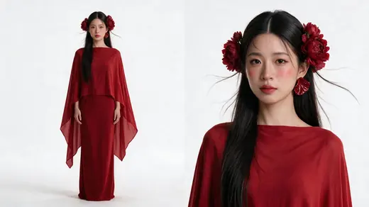
Character sheet人物表
+
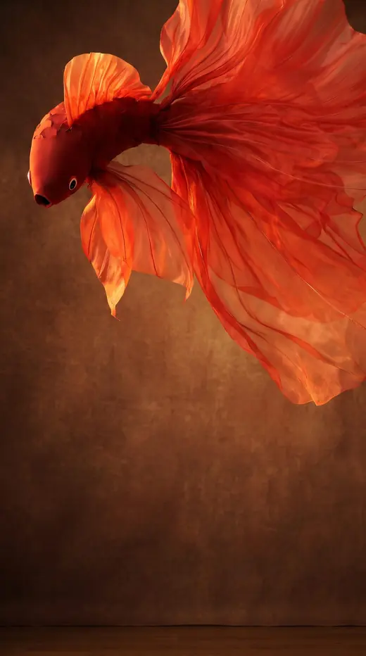
Location场景图
=
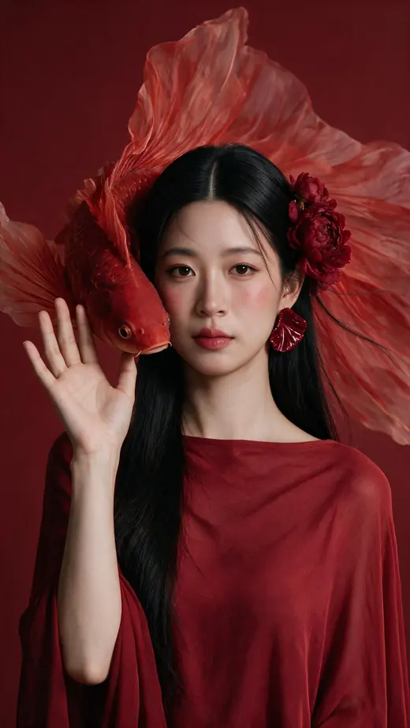
The still静帧
character
Photorealistic character reference sheet, two views on one canvas, white studio, for identity and costume lock.
IDENTITY
Reference image 1 is the only source of her face. The same woman, unchanged: facial structure, eye shape and spacing, brows, nose, lips, jawline, skin texture, and the natural asymmetry between the two halves of her face. Dark brown eyes, alive, looking into the lens. Her head sits square to the camera at the same angle as that image, chin level. Narrow eye spacing, a skull that stays slim at the sides, small ears set flat against the head, a slender neck held upright over the shoulders. The same face in both views.
Reference image 2 has its face blurred out on purpose and shows a different person. Take from it ONLY the red garment: its cut, how it sits on the body, and its colour. Do NOT take its hair, which is a slicked-back bun; do NOT take its earring, which is a hanging tassel; do NOT take its black background, its backlighting, its darkness or the red fish behind her. The fish is a separate prop and stays out of this sheet.
Reference image 3 has its face blurred out on purpose and shows a different person. Take from it ONLY the hair: the centre part, the polished glossy surface, the one-sided gathered style with the length brought forward over that one shoulder, and the few thread-fine wisps floating in the air. Its flowers are pink orchids and must NOT be copied; the flower here is a single red peony. Ignore its face, its clothing and its pale grey background.
GARMENT
Everything she wears is the same deep red, a rich warm true red with no orange and no pink.
A wide boat neckline sits high at the base of her neck and runs straight and level across her collarbones, so that both shoulders are COVERED by the fabric. The garment rests on top of her shoulders. Nothing is off-shoulder and no skin shows at the collarbone line.
Upper layer: a cape in soft lightweight red fabric with a quiet sheen, draped from that neckline over both shoulders and down over the arms so it reads as a wide loose sleeve ending around the forearm. It falls in long fluid vertical folds and drifts away from the body at the sides. Its hem is uneven and asymmetric, cut high across the hip on one side and sweeping lower and wider on the other.
Under it: a long straight column skirt in the same deep red, smooth and simple, skimming the body and falling to the floor.
Her hands and lower forearms are bare below the cape.
The same garment appears in both views, matching detail for detail.
HAIR AND FLOWER
This hairstyle is deliberately one-sided. Everything happens on the LEFT side of the picture and the RIGHT side of the picture stays completely empty. It must never be mirrored, balanced or made symmetric.
Her own near-black hair, centre-parted with a clean straight parting line. The surface is smooth, polished and highly glossy, lying flat and close against the skull and following its curve, with a soft band of light running across the crown. Neat and well kept, never dull and never frizzy.
LEFT SIDE OF THE PICTURE: the hair is drawn back and gathered into a small tie just behind the ear, and from that tie the entire length is brought FORWARD over that shoulder and hangs long, straight and heavy down the front of her chest in one single glossy fall. ONE single red peony is pinned at that tie, sitting right where the hair is gathered. The peony is large and heavy, one bloom only, built from many layers of ruffled silky petals, the outer petals broad and softly curved, the centre densely packed and ruffled, rich crimson red deepening toward the heart of the flower, with a soft sheen and real depth between the layers. No second bloom, no buds, no visible stem, no leaves.
RIGHT SIDE OF THE PICTURE: nothing at all. No flower of any kind. No hair hanging forward. The hair on this side is swept straight back behind the ear and behind the shoulder and disappears from view, so this side of her head, her ear, her neck and her shoulder are completely clear and bare. One large red stud sits flat on this visible ear.
The forehead, the temples and both cheeks stay clear, with no hair covering the face.
Against that neat shape, a small number of baby hairs escape at the hairline and the temple and float free in the air: thread-fine, short, soft and individually drawn, lifting a little way from the head and catching the light as faint bright lines. Just a few of them, delicate and quiet. The gathered length itself stays smooth and heavy and is never blown, never windswept and never streaming across the face.
EARRING
One large stud on the clear right side of the picture, sitting flat and still against the earlobe: a rounded fan of deep red glossy lacquered resin, pleated and ruffled like the edge of a petal, slightly wider than the earlobe, with soft highlights running along the folds. It hugs the ear and does not hang, swing or extend below the lobe.
MAKEUP
Matte translucent skin with a faint highlight on the nose bridge and cheekbone.
Eyes kept soft and understated: natural straight dark brows, a very fine dark line close to the lash line that almost disappears into the lashes, no visible wing, no eyeshadow colour beyond the faintest warm tint on the lid, lashes separated and natural. The eye makeup should read as barely there.
There is almost no blush. The apples of her cheeks carry NO colour at all and stay the same tone as the rest of her face. The only trace of colour is an extremely sheer breath of warm rose brushed along the top edge of the cheekbone, close to the temple, so thin and so faded that it is barely detectable and the bare skin tone and texture read straight through it. It must never form a circle, a patch, a disc or a defined shape, must never be pink or red, must never be dense anywhere, and must never read as flushed, rosy, windburnt or sunburnt. If in doubt, use less.
Lips carry the look: a deep true red with a hint of wine, matte, full, evenly filled in, the outer edge softly diffused. Rich and saturated, clearly the strongest element of the face.
LAYOUT
Two views side by side on one continuous seamless pure white background, generous clean space between them.
LEFT: the complete figure from the top of her head down to the hem of the skirt, nothing cropped, with clear empty white space above her head and below the hem. The figure occupies about 89% of the frame height, placed a quarter of the width from the left edge. Eye-level camera, natural perspective, no wide-angle distortion, the head in correct proportion to the body. She stands square to camera at ease, arms loose at her sides, a faint contact shadow under her. The boat neckline, both covered shoulders, the caped sleeves, the uneven hem, the column skirt, the single peony on the left side of her head, the long hair falling forward down the left of her chest and the completely clear empty right side are all visible.
RIGHT: a frontal portrait on the right half, fully frontal with her eyes into the lens, framed from a little above the top of her hair down to the chest. The entire head stays inside the frame with a clear band of empty white above her hair and above the peony, nothing touching or crossing the top edge of the canvas. Leave the portrait slightly smaller rather than let any part of the head or the flower be cut off. The centre part, the glossy surface of the hair, the gathered tie on the left with the single red peony on it, the long hair falling forward over the left shoulder, the bare uncovered right side with the red pleated stud on that ear, the few thread-fine wisps floating near the temple, the deep red lip, the boat neckline and both covered shoulders are all clearly visible and sharply resolved.
LIGHT
A soft ambient wash as if the whole space sits under a broad overcast sky, directionless and calm, the same in both views, shadows open and transparent, the background staying clean white and brightly lit edge to edge. Her face is fully and evenly lit with both eyes clearly readable. Neutral white balance and accurate colour: the red stays a clean saturated red, the peony reads as deep crimson, the skirt reads smooth and the cape reads light and fluid. Visible pores, fine facial hairs, real skin texture, individual hair strands.
The image must never read as dark, dramatic, backlit, moody or theatrical.
POSITIVE CONSTRAINTS
Exactly two views, one identity, one identical outfit.
The background is pure white across the entire canvas, in both views.
Both heads are complete and fully inside the canvas, with empty white space above each one.
There is exactly ONE flower in the entire image, on the left side of her head, and the right side of her head has no flower.
The hair falls forward over one shoulder on the left only; on the right nothing hangs in front and the ear, neck and shoulder are bare.
The two sides of her head look different from each other in both views.
The cheeks carry essentially no blush; the apples of the cheeks are the same tone as the rest of the face.
The neckline is level and sits on top of both shoulders, covering them, in both views.
The earring sits flat on the earlobe and does not hang below it.
The eye makeup is light and the lip is deep red; the lip is the strongest element.
Only one woman appears in the whole image and she is the woman from reference image 1.
No second flower, no flowers on both sides, no symmetric hairstyle, no hair falling forward on both sides, no round patches of blush.
No fish, no orchids, no pink flowers, no leaves, no stems, no buds, no bun, no tassel or dangling earrings, no black background.
No third panel, no side-profile panel, no additional people, no text, no labels, no logos, no watermark.
location
SCENE CONTEXT
A studio backdrop plate for a vertical short film. This is a reference of an empty photographic studio set with no people in it, used to lock the background before the character is composited in. Photorealistic, a real room with real light, not a flat colour fill and not a render.
THE REFERENCE IMAGE
The reference image contains the fabric fish and the studio wall that this plate must reproduce.
TAKE THE FISH exactly as it appears there: its body shape and proportions, the small tapering head, the slightly open mouth, the eye, the size and shape of every fin, the way the enormous pleated organza tail fans and folds, the fabric, the sheen and the seams. Reproduce it, do not reinterpret it and do not redesign it.
TAKE THE WALL as well: a warm brown mottled studio surface.
The woman in the reference has her face blurred on purpose. She is a different person and must NOT appear. Her red clothing, her hair, her earring and her hand must not appear. Remove the person completely and leave the room empty.
FRAMING
Vertical 9:16 frame.
Shot on a SHORT TELEPHOTO lens, the angle of view of an 85 mm.
The camera is at standing eye level, about 1.6 metres above the floor, and perfectly level: every vertical edge stays vertical and parallel, never converging, never leaning.
The camera is about 4 metres from a clear open spot where a person will later stand, framed from the waist up.
The wall sits only about 1 metre behind that spot and fills the frame from edge to edge, with only a narrow strip of floor along the very bottom and no visible room corner.
The fish floats in the UPPER PART of the frame, its head at the LEFT and its tail streaming to the RIGHT and upward across the top. The lower middle of the frame is completely empty and clear.
THE WALL AND ITS COLOUR
A DEEP, DARK, warm brown: rich chocolate and burnt umber, clearly darker than a mid tone, the kind of old painted canvas backdrop that sits low and quiet. It is mottled so it is never one flat tone, with soft clouds of slightly lighter and darker brown drifting through it and a faint canvas texture where the light grazes.
It is never beige, never tan, never sandy, never pale, never washed out.
HOW THE WALL IS LIT, WHICH MATTERS
The light on the wall has NO SHAPE. It is a single continuous gradient that changes very gradually from one side of the frame to the other, slightly warmer and a little brighter near one edge and sinking into deeper shadow toward the opposite edge and toward the corners. The change is so gradual that you can never find where it begins or ends.
There is NO pool of light, NO spotlight, NO circle, NO oval, NO halo, NO bright patch and NO visible edge of light anywhere on the wall. Nothing on the wall looks like a lamp was aimed at it.
Even at its brightest the wall stays dark and quiet. The wall is never the bright part of this picture.
THE FISH AND ITS LIGHT
The fish is the brightest thing in the frame. Light passes THROUGH its sheer organza fins and tail so the fabric glows from within, the layers lighting up where they overlap and the free edges catching a warm bright rim. The solid silk of the body stays deeper and richer, with soft highlights running along its curve.
That glow belongs to the fabric itself and never spills onto the wall as a patch of light.
CHECKS AGAINST THE REFERENCE
The head is small, smooth and tapering, with a blunt snout and the mouth held slightly open.
The dorsal fin and the pectoral fins are large sweeping sheets of pleated organza.
The tail is enormous, many separate wide pleated panels billowing out and up, taking several times the area of the body.
The eye is a flat patch flush with the head: a large black pupil at the centre, a narrower white ring, and only a thin red outline.
PHYSICS
A gentle current of air moves through the room. The organza tail and fins ripple and undulate slowly, panels lifting and settling against one another. The taut silk body stays smooth and still.
CONSTRAINTS
Copy the fish from the reference image exactly, including its proportions, its fins, its tail and its eye.
The wall is a DEEP DARK warm brown, never beige, never tan, never pale.
The light on the wall is a smooth edgeless gradient across the frame. There is NO pool, NO spotlight, NO circle, NO oval, NO halo and NO bright patch with a visible edge anywhere.
The glowing organza of the fish is the brightest thing in the picture, not the wall.
NO people, no figures, no silhouettes, no hair, no hands, no red clothing, no earrings.
The fish's HEAD points LEFT and its TAIL streams RIGHT and upward, and it stays in the upper part of the frame.
The lower middle of the frame is empty and unobstructed.
No wires, no strings, no rigging, no stands, no lights, no cables, no props, no furniture.
The wall sits about 1 metre behind the standing spot and fills the frame, with only a narrow strip of floor at the very bottom and no visible room corner.
The camera is at standing eye level and perfectly level, with all vertical edges staying vertical.
No text, no labels, no logos, no watermark, no border, no colour bars.
still
Same woman as the attached references. A close shot.
THE FISH. Copy the fish from the attached scene plate exactly: the same creature, the same fabric, the same colour, the same size. It is a KOI CARP made of layers of red gauze, with a thick blunt head and a huge trailing tail. It is not a goldfish. Do not redesign it.
Its position is fixed and high in the frame. Its head is at the same height as her cheek, right at the gap between her raised hand and her face, so the fish is drifting through that gap. Its body curves around from behind her shoulder on that same side, and its long tail spreads out behind her and above her shoulder. The fish must not sink down to her waist, her forearm or the lower part of the frame. It stays on one side, does not pass in front of her face and does not cross the centre of the frame. The backdrop is the same deep red seamless studio wall as in the scene plate.
HER ARMS AND HANDS. She has two arms and two hands and no more. Exactly one hand is visible in this frame.
The visible hand is on the same side of her as the koi. It is wide open, all five fingers extended and softly spread, relaxed, gripping nothing and pointing at nothing. It is held edge on, turned so her palm faces the side of her face, with the little finger side toward the camera. The heel of her hand is level with her chin and her fingertips reach no higher than her eyes. It sits just outside the outline of her face and does not overlap her cheek, her eye or her jaw.
Her other arm hangs down at her side and is out of frame below the bottom edge. Do not draw a second raised hand, a second forearm, or any extra limb anywhere in the image.
HER FACE. Her bone structure, the spacing between her eyes, the bridge of her nose and the shape of her jaw come from the neutral portrait. Her face is wide relative to its length, not long and narrow. The lower third of her face, from the base of her nose to the bottom of her chin, is short. Her chin is small and softly rounded. Her skin is smooth and young with no deep lines.
She is square to the camera, chin level, looking straight down the lens. She is not turning back over her shoulder.
THE MOMENT. She does not smile at all. Her lips are closed and relaxed. The expression is calm, contained and cool, with a quiet authority: she knows she is being photographed and she is completely unbothered. Her eyes rest steadily on the lens. This is stillness, not attitude. Nothing sultry, nothing provocative, no pout, no raised eyebrow, no playing to the camera.
HAIR AND MAKEUP. Long straight centre-parted black hair with a polished sheen close to the scalp, gathered on one side only and brought forward over that shoulder, the other side clear. A single large red peony where the hair is gathered. Fine loose strands lift and float. True red lips, clean skin, a soft blush swept diagonally upward, present but never heavy. Earrings exactly as in the character sheet.
WARDROBE. A deep true red gown with a lot of red gauze, exactly as in the character sheet. The neckline is a wide boat neck that sits across the tops of her shoulders and covers them.
LIGHT. Keep the light exactly as it is in the attached scene plate. It is even and has no shape: no visible beam, no shaft, no bright stripe, no rim outline around her hair. Expose normally and keep the full range of mid-tones in her skin and in the red fabric.
FRAMING. Vertical 9:16. A close shot. The bottom edge of the frame sits just below her bust. From the top of her hair to her chin takes up about a third of the frame height. Only a small gap above her hair. 135mm lens at eye level, natural perspective, no wide-angle distortion.
SHE IS BEING PHOTOGRAPHED AND SHE IS GOOD AT IT. Her ease is a trained ease, held rather than slack: shoulder blades drawn back and down away from her ears, chest open, collarbones showing, the back of her neck long, spine lifted. Nothing slumped or hunched, shoulders never rolling forward.
Real photographic skin with visible pores and texture, fine stray hairs, natural film grain. No airbrushing, no plastic sheen, no engineered contrast.
video
The attached image is the locked still for SHOT 1, RED. Do not regenerate it, do not restyle it, and do not change her face, her expression, her hair, her dress, the fish or the background. Use it exactly as it is, as the first frame.
THE KOI. It drifts slowly forward and past her, coming from behind her shoulder and moving toward the camera, passing through the gap between her open hand and her cheek. Its long gauze tail unfurls behind it and the light slides across the layers of fabric. It stays at the height it is in the still and must not sink toward her waist or the bottom of the frame.
HER HAND stays exactly where it is, open, fingers spread, at the same height. It does not rise, does not sweep outward and does not close. As the koi passes, her fingertips brush it for a moment.
She does not smile at any point; the expression stays calm, contained and cool, with her eyes on the lens the whole time.
She has two arms and two hands and no more. One koi only. No other people, no new objects, no cuts. Generate no audio.
YELLOW
summer forest + butter yellow夏日森林 + 奶油黄
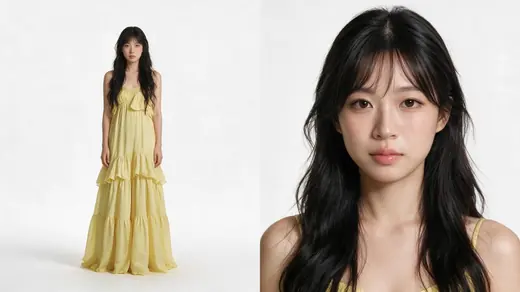
Character sheet人物表
+
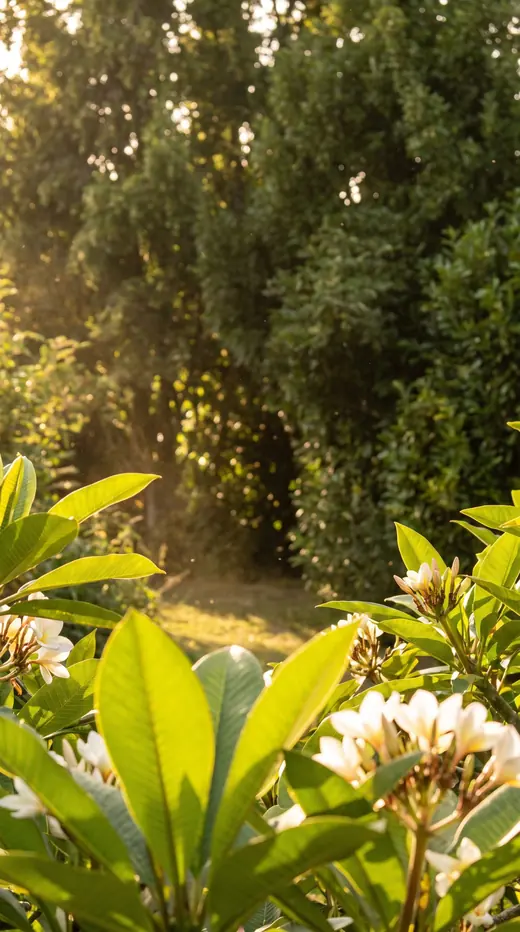
Location场景图
=
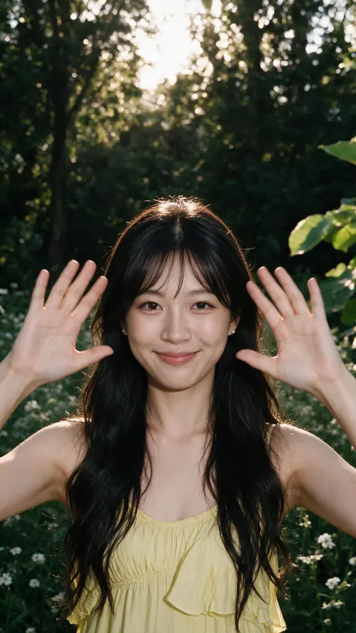
The still静帧
character
Photorealistic character reference sheet, two views on one canvas, white studio, for identity and costume lock.
IDENTITY
Reference image 1 is the only source of her face. The same woman, unchanged: facial structure, eye shape and spacing, brows, nose, lips, jawline, skin texture, and the natural asymmetry between the two halves of her face. Dark brown eyes, alive, looking into the lens. Her head sits square to the camera at the same angle as that image, chin level. Narrow eye spacing, a skull that stays slim at the sides, small ears set flat against the head, a slender neck held upright over the shoulders.
Reference image 2 has its face blurred out on purpose and shows a different person. Take from it the dress, the hair shape and the fabric quality. Ignore her face, her background, her green foliage and her warm sunlight.
GARMENT
A soft butter-yellow dress in fine silk chiffon with a light matte surface, worn on thin delicate straps over bare shoulders. The bodice is gathered and softly ruffled across the chest, falling into a long skirt built from wide tiered ruffles that layer down to the floor with plenty of movement and volume.
The same dress appears in both views, matching detail for detail.
HAIR
Her own near-black hair worn long and loose, with soft wide waves through the lengths and real volume, falling over both shoulders and down her back. Wispy curtain bangs sit across her forehead, parted slightly in the middle and tapering longer at the sides to frame her face. A few fine strands float free around her cheeks and at the top of her hairline.
MAKEUP
Bare and dewy, almost no product, skin left with a real natural sheen and visible pores rather than powder.
Soft light-brown brows, brushed up and barely shaped.
Eyes clean and undone: no eyeshadow colour, no liner, just separated natural lashes and a soft fold of fullness under the lower lash line.
Blush is a pink wash carried straight across both cheeks and over the bridge of the nose, high and soft-edged, like a light flush from the sun.
Lips a sheer peachy-pink with a wet gloss finish, the colour uneven and tinted rather than painted, the natural lip line still showing through.
LAYOUT
Two views side by side on one continuous seamless pure white background, generous clean space between them.
LEFT: full body with headless framing, cropped cleanly at the collarbones and empty white above the neck. Both bare shoulders, the thin straps, the ruffled bodice and the full tiered skirt down to the hem. The figure occupies about 89% of the frame height, placed a quarter of the width from the left edge. Eye-level camera, natural perspective. She stands square to camera at ease, arms loose at her sides, a faint contact shadow under her.
RIGHT: a large frontal portrait filling the right half, from the crown of her head down to the chest, fully frontal with both ears equally visible and her eyes into the lens. The curtain bangs, the soft waves, the flushed cheeks, the glossy sheer lip, the thin straps and both bare shoulders all clearly visible. The face is the dominant detail and is sharply resolved.
LIGHT
A soft ambient wash as if the whole space sits under a broad overcast sky, directionless and calm, the same in both views, shadows open and transparent, the background staying clean white. Neutral white balance and accurate colour. Visible pores, fine facial hairs, real skin texture, individual hair strands.
POSITIVE CONSTRAINTS
Exactly two views, one identity, one identical outfit.
The dress is butter yellow, matte chiffon, with thin straps and tiered ruffles, in both views.
The eye makeup is bare and the cheeks carry the colour.
Only one face appears in the whole image, in the right view, and it is the woman from reference image 1.
No flowers, no props in her hands.
No third panel, no side-profile panel, no additional people, no text, no labels, no logos, no watermark.
location
SCENE CONTEXT
A location plate for a vertical short film. This is a background reference of a real outdoor place with no people in it, used to lock the environment before the character is composited in. Photorealistic, shot on location, not a studio, not a render and not an illustration.
FRAMING
Vertical 9:16 frame.
Shot on a SHORT TELEPHOTO lens, the angle of view of an 85 mm, at a wide aperture.
The camera is at standing eye level, about 1.6 metres above the ground, and perfectly level: every vertical edge stays vertical and parallel, never converging, never leaning. It is NOT looking down at the ground and NOT looking up at the sky.
The camera is about 4 metres from a clear open spot where a person will later stand, framed from the waist up, filling most of the height of the frame.
A hedge of green shrubs stands about 3 metres BEHIND that spot. There is no lawn, no clearing and no dark gap between the standing spot and that hedge.
HOW THE FRAME IS DIVIDED
The LEFT THIRD and the CENTRE THIRD of the frame stay open and uncluttered from top to bottom, so that a person standing in the middle would be seen clearly from the waist up with nothing in front of her.
Only the RIGHT THIRD carries the near foreground planting. Nothing from that foreground group reaches past the right third into the centre.
WHAT IS IN THE FRAME, IN THREE LAYERS
FOREGROUND, about 1.5 metres from the camera, in the RIGHT THIRD only, entering from the right edge and the bottom right corner: ONE loose group of alstroemeria, HEAVILY OUT OF FOCUS and dissolved into soft shapes with no hard edges. Its blooms are pale yellow with green throats.
MID-GROUND, about 3 metres away at the LEFT edge of the frame: ONE smaller group of the same flowers, gently soft, standing low so it sits well below the height of a standing person's shoulders. Its blooms are white warming to cream.
BACKGROUND: the hedge, a dense mass of small-leaved green shrubs filling the whole frame from bottom to top, softly out of focus. The sun sits behind it so its upper leaves glow a warm yellow-green while the lower part stays deeper green.
WHAT THE FLOWERS LOOK LIKE
Each bloom is a LILY-SHAPED TRUMPET: six long pointed petals flaring open from a narrow throat, about the size of a palm, with fine darker streaks running up the two upper petals and a green-yellow centre. They are open and papery, never round, never frilly, never ruffled, never rose-shaped, never daisy-shaped and never bell-shaped.
They sit in small loose sprays of three to five blooms at the very TOP of each stem, with a few closed pointed buds among them.
The stems are long, slender and bare for most of their length, standing apart from one another with clear open air between them. The leaves are few, thin, narrow and twisted, spaced along the stem rather than massed at the base, and light shines straight through them.
The stems are clearly different heights so the sprays sit at several different levels.
There is almost no grass: no grass clumps, no reeds, no dense low foliage, and no packed bed of blooms anywhere.
THE TOP OF THE FRAME AND THE SKY
The hedge fills the top of the frame. There is no open sky, no white band and no bright empty area across the upper part of the picture.
Only a few SMALL scattered gaps of pale light show between the leaves high in the hedge, each one no bigger than a leaf, glowing softly. Nothing larger.
LIGHTING
Late afternoon sun, LOW and BEHIND the hedge, off to one side and never directly behind the standing spot. It filters THROUGH the leaves so the whole hedge glows warmly from within and the petals and thin leaves light up from behind.
The light is soft, diffuse and even. There are NO visible beams, NO shafts, NO rays, NO light streaks crossing the frame and no hard bright patches. It is the gentle warm light of late afternoon, never strong midday sun.
A broad soft bounce fills the scene from the front, so the shadows stay warm, open and transparent with no black anywhere.
The empty standing spot is clearly lit frontally, so a person standing there would be evenly lit in the face and would never read as a silhouette.
A gentle warm haze hangs in the air with soft bloom around the small bright gaps, and fine pollen drifts through it.
Warm, golden, soft and open. Never dark, never shaded, never harsh, never contrasty.
DEPTH OF FIELD
Three clearly different degrees of sharpness: the right foreground group is the softest, dissolved almost to colour; the standing spot in the centre is the sharpest plane; the left group is gently soft; the hedge is very soft. Real optical blur with soft round highlights.
PHYSICS
A light breeze runs through the garden: the tall stems sway out of time with one another, the thin leaves flicker, and loose pollen drifts across the frame. The out-of-focus hedge shimmers. Nothing is frozen, nothing is still.
CONSTRAINTS
No people, no figures, no silhouettes, no animals.
The left third and the centre third of the frame are open and clear from top to bottom. The foreground planting stays entirely within the right third and never crosses into the centre.
There is no open sky and no white or bright empty band anywhere in the frame; the hedge fills the top, with only a few small leaf-sized gaps of light showing through it.
The light is soft, diffuse late-afternoon backlight filtering through leaves. There are no visible beams, shafts, rays or light streaks, and no strong midday sun.
The flowers are lily-shaped trumpets with six long pointed petals, carried in small sprays at the tops of long slender bare stems at different heights, with few thin narrow leaves. Never round, frilly or ruffled blooms, never a dense bush, never a packed flower bed.
Almost no grass: no grass clumps, no reeds, no dense low foliage.
The hedge begins about 3 metres behind the standing spot. There is NO lawn, NO clearing and NO dark gap behind the standing spot.
The camera is at standing eye level and perfectly level, with all vertical edges staying vertical.
Nothing in the frame reads as a dark silhouette; the shadows stay open and warm.
No horizon, no distant landscape, no buildings, no fences, no paths.
No text, no labels, no logos, no watermark, no border, no colour bars.
still 1
Same woman as the attached references. A close shot.
HER FACE, TWO REFERENCES. Her bone structure, the spacing between her eyes, the bridge of her nose and the shape of her jaw come from the neutral portrait. The way she smiles comes from the second photograph, the one where she is smiling: copy that exact smile, the same muscle movement, the same small amount of it.
Keep her lower face short. The distance from the base of her nose to the bottom of her chin is short, as in the references, and must not be lengthened. Her chin is small and softly rounded.
Her lips stay closed, no teeth. The corners of her mouth lift only very slightly, almost not at all. No nasolabial folds, no lines running from the corners of her mouth down toward her jaw, no dimpling or puckering on her chin. Her cheeks barely rise. The smile is in her eyes: her lower eyelids lift a little and the outer corners of her eyes crease, so she reads bright, quick and alive, with a spark of mischief, the look of someone who knows something good. Her skin is smooth and young.
SHE IS ALONE. The forest is empty apart from her. No other people anywhere in the frame.
FRAMING. Vertical 9:16. A close shot, not a medium shot. The bottom edge of the frame sits just below her bust. From the top of her hair to her chin takes up about a third of the frame height. Only a small gap above her hair. Her hands come into the frame at the sides and it is completely fine for them to run off the left and right edges; do not pull the camera back in order to fit them in. 135mm lens at eye level, natural perspective, no wide-angle distortion.
HER ARMS AND HANDS. Her upper arms are lifted away from her sides with her elbows out, each upper arm making an angle of roughly 45 to 70 degrees with her torso: open, but not raised all the way to a right angle. Her elbows are not tucked against her ribs. Her forearms come up so that her hands are at the height of her face, one on each side of it, in the same plane as her face rather than down in front of her chest. Palms face the camera, fingers relaxed and slightly spread. She is in the middle of sweeping her hands apart to either side, as if opening the world in front of her. Her hands touch nothing at all: no flowers, no leaves, nothing. She is not parting anything.
SHE IS BEING PHOTOGRAPHED AND SHE IS GOOD AT IT. This is a fashion portrait, not a candid snapshot. Her ease is a trained ease, held rather than slack: her shoulder blades are drawn back and down away from her ears so her chest is open and her collarbones show, the back of her neck is long, her spine stays lifted. Nothing about her is slumped or hunched and her shoulders never roll forward. Her face is turned all the way to the camera, nearly frontal, looking straight down the lens.
HAIR AND ACCESSORIES. Her hair, hair ornament and earrings exactly as in the attached character sheet, all clearly visible.
WARDROBE. A soft butter yellow long dress, exactly as in the character sheet.
LOCATION. A forest. A dense row of deep green trees standing close behind her, not a distant view. Clumps of small white wildflowers. A few broad green leaves in the foreground, soft and out of focus, entering only from the right hand side of the frame and never reaching the centre or the left. The flowers are white, not yellow. The only yellow in this image comes from her dress and from the sunlight.
WEATHER AND LIGHT. Late afternoon, the sun low and behind the trees, backlighting her. The light filters down through the leaves in soft scattered warm patches and catches the edges of her hair and the white flowers. Gentle light that has drifted in, not harsh overhead noon sun, and no visible beams or shafts. Only a small amount of sky shows through a gap in the trees; do not open up a large bright white sky.
This is weather, not a lighting setup. No studio lights, no key and rim scheme, no engineered contrast.
Real photographic skin with visible pores and texture, fine stray hairs, natural film grain. No airbrushing, no plastic sheen.
still 2
The attached image is the finished shot. Produce the exact same image with one single change: her hands.
Instead of being out at either side of her face, both hands are brought together in front of her chest, palms flat against each other, fingers pointing up, held just below her chin and close to her body. Her elbows drop in toward her sides.
Nothing else changes. Same framing, same crop, same camera position and distance, same face, same expression, same hair with every strand in the same place, same dress, same forest, same white flowers, same light, same colour, same grain. Her head stays exactly the same size and in the same place in the frame.
Real photographic skin with visible pores and texture, natural film grain. No airbrushing, no plastic sheen, no re-rendering of the scene.
video
Two images are attached. Image 1, her palms together, is the FIRST frame. Image 2, her hands out beside her face, is a position she passes through partway. If you can take a first and last frame, use image 1 as the first; otherwise use image 1 as the first frame and treat image 2 as a position she must move through.
Her hands start pressed together in front of her chest, palms flat against each other, fingers up. They open outward and travel horizontally only, staying at the height of her face the whole way, never rising above the top of her head. Think of her palms sliding sideways along a sheet of glass in front of her. They pass through exactly the position in image 2, palms flat to the camera and fingers pointing up, and keep going until her arms are almost straight and her hands run off the left and right edges of the frame. She touches nothing. Her fingers spread a fraction wider partway and then soften.
YELLOW TIMING, which replaces the general timing rule. This is a real gesture at a natural brisk pace, not slow motion. The opening takes about two thirds of the clip, moving quickly at first and easing off toward the end, and her hands are out of frame before the clip finishes. It must never look like slowed down footage.
She is already smiling in the first frame and holds that one bright, alive, closed lipped smile to the end; no teeth, and it lives in her eyes.
ORANGE
autumn trees + amber organza秋林 + 琥珀欧根纱
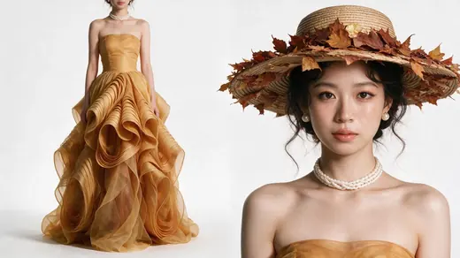
Character sheet人物表
+
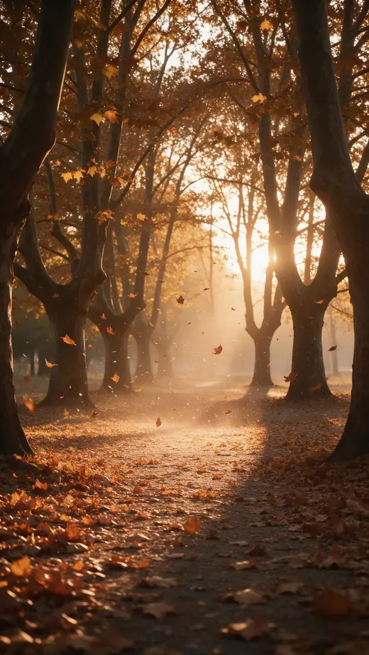
Location场景图
=
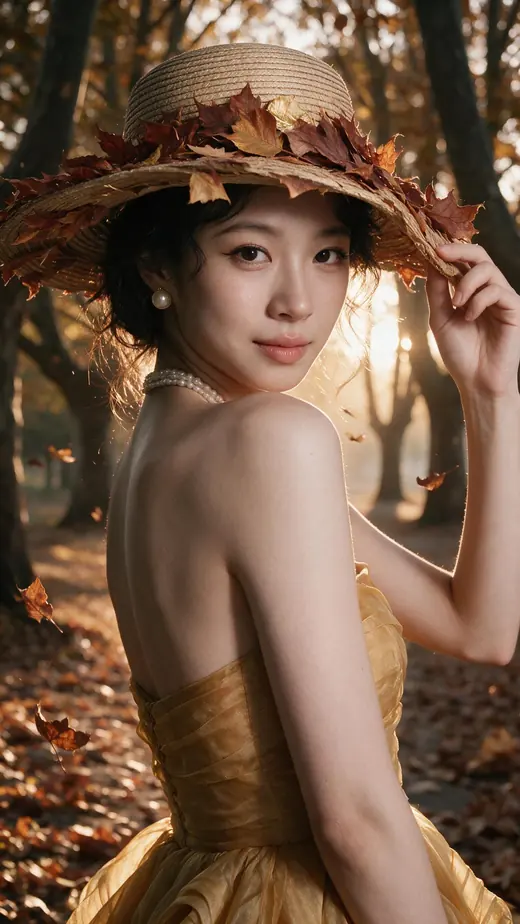
The still静帧
character
SCENE CONTEXT
Photorealistic character reference sheet of one young woman, two views on a single canvas, for identity and costume lock. This is a reference document, not a finished photograph.
IDENTITY
The FIRST reference image is the identity reference. The woman in the output is this exact woman, unchanged: her facial structure, eye shape and spacing, brows, nose, lips, jawline, skin tone and texture, and the natural asymmetry between the two halves of her face. No facial redesign, no beautification, no face slimming, no enlarged eyes.
Her eyes are alive and looking straight at the lens, the way a person looks at someone they know. Both irises are the same warm dark brown, the same size and the same roundness, with a matching catchlight in each.
The same face appears in both views, identical in both.
FACE GEOMETRY LOCK
Copy her head from the first reference image at the same angle it is shown there: square to the camera, chin level, head upright. Do not turn her head, do not tilt it, do not raise or lower the chin.
Keep her exact facial proportions from that image: the distance between her eyes, the height of the middle of her face from brow line to the base of the nose, the distance from the base of the nose to the mouth, the width of the jaw, and the length of the chin. The spacing between her eyes is narrow, not wide.
Her neck is upright and set back over her shoulders, not pushed forward, with no forward head posture and no jutting chin. A slender neck.
STYLING REFERENCE — HAT SHAPE AND CHOKER
In the SECOND reference image the model's facial features have been blurred out on purpose. She is a different person and her face, her head angle and her body proportions must not appear in the output. Follow from it only the shape and the natural straw of the wide-brimmed hat and the three-strand pearl choker. Do NOT take its earrings, its background, its sunlight or its colour grade.
EARRINGS
One single round white pearl stud in each ear, about 10 mm across: a smooth, perfectly spherical, high-quality pearl with a soft warm lustre and a faint rose overtone, sitting flush against the earlobe on a plain fine gold post. Nothing hangs from it. No drop, no dangle, no chain, no metal surround, no crystal halo, no baroque or irregular shape. Just the pearl.
THE HAT — LEAVES ONLY, DENSE AND RESTRAINED
Keep the shape and the straw of that hat, but redress it completely. No flowers at all: no poppies, no blossoms, no petals of any kind. Only leaves.
Dried autumn leaves, mostly maple and oak with a few slender willow leaves, in a narrow and restrained palette: rust red, burnt amber, caramel, deep chestnut brown, with only a little muted gold. No bright orange, no pink, no green, no multi-coloured mix.
The leaves are laid in a continuous overlapping band that follows the whole curve of the brim, dense enough that only small patches of straw still show between them, each leaf lying flat against the brim and pointing the same way around the circle, so it reads as one considered wreath rather than scattered clusters.
The same leaves continue on the UNDERSIDE of the brim, a thinner layer there, with a few individual leaves hanging low over her forehead and near her temple so they frame the top of her face.
Elegant, tonal and deliberate. Never busy, never craft-fair, never a random bouquet.
STYLING REFERENCE — GOWN
In the THIRD reference image the model's facial features have also been blurred out on purpose; she is a different person and her face and body must not appear. Follow from it only the gown: warm amber-gold organza with a fitted strapless bodice and an enormous sculptural skirt built from wide bands of stiff translucent organza rolled and coiled into deep spiralling ruffles that stand away from the body and pool on the ground. Do NOT take its background, its sunlight, its haze or its colour grade.
HAIR
Long near-black hair with soft, airy, loosely defined curls of uneven size, full and voluminous with a little natural mess, lifted away from the scalp. Gathered into a bun at the back of the head that stays hidden behind the hat brim, with loose curled strands falling at her cheeks and nape. Never tight uniform spirals, never corkscrew or telephone-cord curls, never a stiff perm. Young and fresh, not matronly. The same hair in both views.
POSE
Shoulders dropped and open, level with each other, never hunched and never pulled up toward the ears. Collarbones relaxed and visible, neck long and upright, chin level. Arms hanging loosely with a clear gap between the upper arms and the torso, hands soft, weight settled on one leg so the body reads at ease.
MAKEUP
Warm caramel and amber, applied to her own features and following her own eye shape. Soft brown brows. Warm tan-orange shadow over the lid, a fine black liner kept thin along the lash line and lifted into a long tail at the outer corner, lower lashes drawn in individually and clearly visible. Warm apricot blush on the apples of the cheeks. Lips a nude-coral with a glossy wet finish. Skin left juicy with real highlights on the cheekbone and the tip of the nose.
COMPOSITION
Exactly two photographic views on one continuous seamless pure white studio background, the same clean white behind both views, evenly lit, with no visible corner, horizon or environment. No panel borders, no gutters, no dividing line. Generous clean space between the two views.
LEFT VIEW — FULL BODY, COMPLETE FIGURE
Place the standing figure around one quarter of the frame width from the left edge. Show the complete figure from the top of the hat down to the hem of the gown, nothing cropped, with clear empty white space above the hat and below the hem. The figure occupies approximately 89% of the frame height. Eye-level camera, natural perspective, no wide-angle distortion, no shortened legs, the head and hat in correct proportion to the body and never oversized. She stands square to the camera at ease, arms loose at her sides, the sculptural skirt spreading around her feet. A faint contact shadow grounds her. The hat with its leaves, the hair, the pearl choker, the bare shoulders, the amber bodice and the full spread of the gown are all visible.
RIGHT VIEW — LARGE FRONTAL PORTRAIT
The portrait fills the right half of the frame, cropped at the chest at the bottom. The entire head and the full width of the leaf-covered brim stay inside the frame, with a clear band of empty white above the hat, nothing touching or crossing the top edge of the canvas. Leave the portrait slightly smaller rather than let any part of the head or the hat be cut off.
Her head is square to the camera, exactly the same angle as in the first reference image: fully frontal, both ears equally visible, both sides of the face equally visible, chin level, eyes straight into the lens. Not a three-quarter view, not turned, not tilted.
The leaves on top of the brim, the leaves hanging under the brim near her forehead, the round pearl studs, the pearl choker and the bare shoulders with the top edge of the amber bodice are all clearly visible. The face is the dominant detail in this view and is sharply resolved.
LIGHT AND FINISH
Neutral and even across both views: a soft ambient wash as if the whole space sits under a broad overcast sky, directionless and calm, wrapping the figure gently, shadows open and transparent, every fabric reading true. The background stays clean white and takes no colour from the lights. Neutral white balance, accurate colour: the amber reads amber, the straw reads straw, the pearls read white.
Visible pores, fine facial hairs, authentic skin texture. Crisp straw weave, individual hair strands, the organza reading as real stiff fabric with visible edges and translucency. No artificial sharpening, no beauty retouching, no colour grade, no film emulation.
CONSTRAINTS
Exactly two views, one identity, one identical outfit.
Only one woman appears in the whole image and she is the woman from the first reference image, at the same head angle and with the same proportions in both views.
Both heads are complete and fully inside the canvas, with empty white space above each one.
No three-quarter or turned head, no tilted head, no forward-leaning neck.
No flowers anywhere on the hat.
No hanging, dangling or drop earrings; only round pearl studs.
No environment, no scenery, no foliage, no sunlight, no sun flare, no haze, no coloured light, no golden grade.
No blurred, smeared or out-of-focus face anywhere in the output.
No third panel, no side-profile panel.
No other people, no text, no labels, no logos, no watermark.
location
SCENE CONTEXT
A location plate for a vertical short film. This is a background reference of a real outdoor place with no people in it, used to lock the environment before the character is composited in. Photorealistic, shot on location, not a render and not an illustration.
FRAMING
Vertical 9:16 frame.
Shot on a SHORT TELEPHOTO lens, the angle of view of an 85 mm, at a wide aperture.
The camera is at standing eye level, about 1.6 metres above the ground, and perfectly level: every vertical edge stays vertical and parallel, never converging, never leaning.
The camera is about 4 metres from a clear open spot on the ground where a person will later stand, framed from the waist up, filling most of the height of the frame.
The trees close in about 3 metres BEHIND that spot. There is no path running away behind her, no clearing and no empty ground between the standing spot and the trees.
THE TONAL RANGE, WHICH MATTERS MOST
This picture must hold a wide range from very dark to very bright, not sit in the middle.
THE DARK ANCHOR: one or two heavy tree trunks stand close to the camera at the LEFT and RIGHT edges of the frame, out of focus and almost in silhouette, nearly black with only a thin warm rim of light down one side. They are the darkest thing in the picture.
THE BRIGHT ANCHOR: at ONE SIDE of the frame, well away from the centre, the low sun burns through a narrow gap between distant trunks. That gap is blown out to pure white, with warm halation spreading around it and soft beams of light fanning out from it through the haze.
Everything else sits between those two extremes. The image must never be flat, never sit entirely in the mid tones, and never read as an even grey-brown wash.
WHAT IS IN THE FRAME
FOREGROUND, about 1.5 metres away at the left and right edges and along the bottom: the dark trunks described above, plus a drift of fallen leaves on the ground, heavily out of focus.
The CENTRE, about 4 metres away: a clear open patch of leaf-covered ground where the person will stand, unobstructed, the sharpest plane in the picture. It sits in open warm light, clearly lit, with the dark trunks framing it on both sides.
BEHIND, from 3 metres back: a close stand of autumn trees filling the frame, trunks rising vertically, their canopy dense overhead and between them. On the side where the sun is, the trunks thin out just enough to let that bright gap through; everywhere else the canopy is continuous with no path and no view beyond.
THE AUTUMN COLOUR
The LEAVES are clearly ORANGE: warm bright orange, amber and copper, glowing where the light passes through them, with some rust and a little pale yellow scattered thinly, and some leaves still green lower down in the shade.
The GROUND LITTER is browner and duller than the canopy, and the TRUNKS are dark grey-brown.
So the picture has three separate colour zones and they must stay different from one another: an orange canopy, a brown floor, dark trunks.
The image is never a single flat brown, never sepia, never a uniform tan wash. It is not a monochrome orange field either.
LIGHTING
A low sun sitting well off to ONE SIDE of the frame, behind the trees, burning through a narrow gap between the trunks. It rakes sideways across the scene, throwing long shadows from the trunks across the leaf-covered ground and lighting every leaf edge that faces it with a hot golden rim.
Soft beams of light fan out from that gap through visible warm haze, picking out drifting dust and falling leaves.
A broad soft bounce fills the shadows from the front so they stay warm brown and transparent with detail inside them, never crushed to flat black except in the near trunks.
The standing spot is lit frontally by that bounce, so a person there would be clearly lit in the face and would never read as a silhouette. The sun is never directly behind the standing spot.
FINISH
Real optical rendering: visible warm halation around the brightest gap, gentle bloom, a soft highlight rolloff, and fine natural film grain throughout. Rich contrast with deep warm blacks and clean bright highlights.
Never flat, never hazy grey, never plasticky, never digitally smooth, never low contrast.
DEPTH OF FIELD
The near trunks and fallen leaves are the softest, the standing spot is the sharpest plane, the trees behind are very soft and broken into round discs of light. Real optical blur with soft round highlights.
PHYSICS
A light breeze moves through the wood: individual leaves turn on their stems, several loose ones let go and drift down and sideways across the frame, and the leaves on the ground stir. Dust drifts through the beams. Nothing is frozen, nothing is still.
CONSTRAINTS
No people, no figures, no silhouettes, no animals.
The picture holds a full tonal range: near-black trunks at the edges in the foreground, and a blown-out bright gap of sunlight at one side. It is never flat and never sits only in the mid tones.
The bright gap is at one SIDE of the frame and never behind the standing spot.
The trees close in about 3 metres behind the standing spot. There is NO path running away behind her, NO clearing and NO open ground there.
The canopy leaves are clearly orange, amber and copper, distinct from the browner ground litter and the dark trunks. The image is never one flat brown, never sepia and never a uniform tan wash.
The camera is at standing eye level and perfectly level, with all vertical edges staying vertical.
The centre of the frame is empty and unobstructed, and clearly lit.
Visible film grain, warm halation and bloom. Never digitally smooth and never low contrast.
No open sky, no horizon, no distant landscape, no buildings, no fences, no benches.
No text, no labels, no logos, no watermark, no border, no colour bars.
still
Same woman as the attached references. A close shot.
THE PLACE COMES FROM THE ATTACHED SCENE PLATE. An avenue of autumn plane trees at sunset. Dry orange and brown leaves blowing through the air and carpeting the ground. The low sun sits low between the trunks behind her and backlights everything in warm amber. Keep that place and that light exactly as they are in the plate. Do not redesign the background.
HER POSE. Her back is turned to the camera, her body angled away over one shoulder. Her head turns back toward the lens and comes nearly all the way round, so her face reads as almost frontal rather than a three quarter view. Her chin tucks slightly in toward her shoulder. The glance-back feeling comes from the angle of her body, not from the angle of her face.
HER HANDS. She has two arms and two hands and no more. Exactly one hand is visible. That hand reaches up and takes the brim of her hat at the side, pulling it down a little against the sun. It stays out at the side of the brim and does not cross in front of her face or cover any part of it. Her other arm hangs down and is out of frame below the bottom edge. Do not draw a second raised hand or any extra limb.
HER FACE. Her bone structure, the spacing between her eyes, the bridge of her nose and the shape of her jaw come from the neutral portrait. Her face is wide relative to its length, not long and narrow. The lower third of her face, from the base of her nose to the bottom of her chin, is short. Her chin is small and softly rounded. Her skin is smooth and young with no deep lines.
THE MOMENT. The expression is set from the very first frame and does not change. Her eyes are bright, direct and awake, looking straight down the lens. Her lips stay closed with the corners lifted just a little; no teeth show. It is a small, warm, self possessed smile, the smile of someone who has just been caught looking back and does not mind. Nothing coy, no pout, no playing to the camera.
HAIR, HAT AND JEWELLERY, exactly as in the character sheet. A wide brimmed natural straw hat, its brim covered all the way round with real autumn maple leaves in rust and deep red, with one gold leaf on the crown. Short black hair with soft volume and curl, fine strands loose around her face and neck. Large round pearl stud earrings. A choker of several fine strands of small pearls sitting high and close against her throat. Clean skin, a soft upward flick of liner at the outer eye, a bare peachy lip.
WARDROBE. A strapless amber gold organza gown with deep rolled ruffles, exactly as in the character sheet.
FRAMING. Vertical 9:16. A close shot, not a medium shot. The bottom edge of the frame sits just below her bust. From the top of her hat to her chin takes up a little under half the frame height, and her face alone takes about a third. The brim of the hat may run off the left and right edges of the frame; do not pull the camera back in order to fit the whole hat in. 135mm lens at eye level, natural perspective, no wide-angle distortion.
WIND. A light wind lifts the loose strands around her face and carries leaves past her.
SHE IS BEING PHOTOGRAPHED AND SHE IS GOOD AT IT. Her ease is a trained ease, held rather than slack: shoulder blades drawn back and down away from her ears, chest open, collarbones showing, the back of her neck long, spine lifted. Nothing slumped or hunched, shoulders never rolling forward.
Expose it normally and keep the full range of mid-tones in her skin and in the leaves. No studio lights, no key and rim scheme, no engineered contrast.
Real photographic skin with visible pores and texture, fine stray hairs, natural film grain. No airbrushing, no plastic sheen.
video
The attached image is the locked still for SHOT 3, ORANGE. Do not regenerate it, do not restyle it, and do not change her face, her expression, her hat, her hair, her dress or the background. Use it exactly as it is, as the first frame.
Her hand stays on the brim of the hat where it already is and simply pulls the brim down a small amount against the sun. That is the whole gesture. The hand does not rise, does not sweep outward, does not leave the brim and does not cross in front of her face.
She barely moves otherwise. She does not turn her head further round and she does not turn away.
Dry autumn leaves blow through the frame around her, some close to the lens and out of focus. The wind lifts the loose strands at her temples, the leaves pinned to the hat brim and the sheer fabric of her dress.
Her expression never changes from the one in the still: bright direct eyes on the lens, lips closed, a small warm smile. She never breaks into a wider smile and never looks away.
She has two arms and two hands and no more. No other people, no new objects, no cuts. Generate no audio.
BLUE
blue meadow + white horse蓝色草原 + 白马
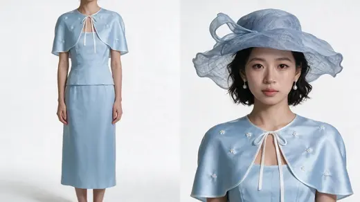
Character sheet人物表
+
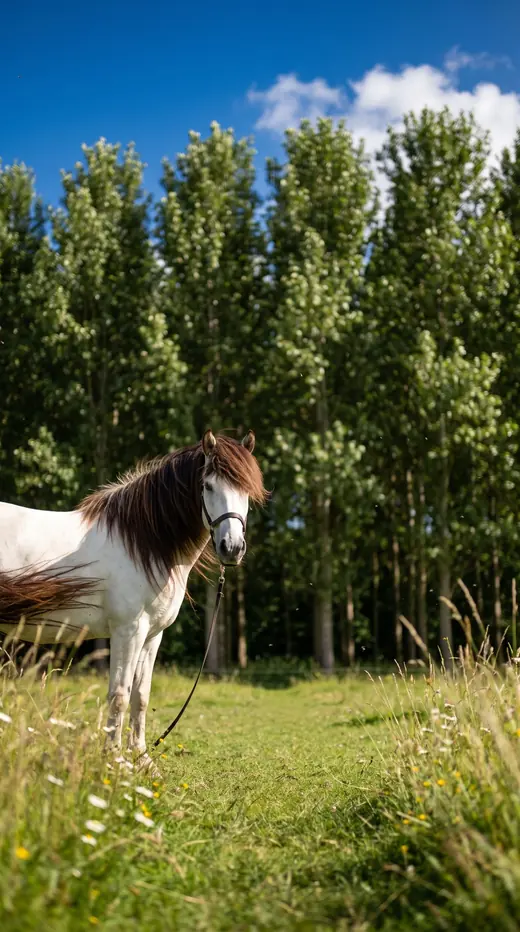
Location场景图
=
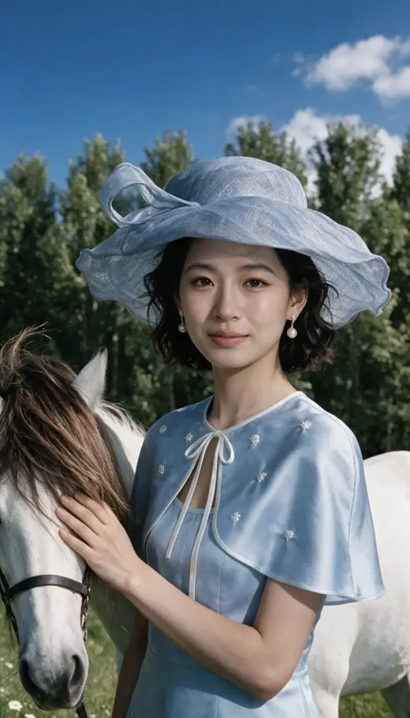
The still静帧
character
Photorealistic character reference sheet, two views on one canvas, white studio, for identity and costume lock.
IDENTITY
Reference image 1 is the only source of her face. The same woman, unchanged: facial structure, eye shape and spacing, brows, nose, lips, jawline, skin texture, and the natural asymmetry between the two halves of her face. Dark brown eyes, alive, looking into the lens. Her head sits square to the camera at the same angle as that image, chin level. Narrow eye spacing, a skull that stays slim at the sides, small ears set flat against the head, a slender neck held upright over the shoulders.
Reference image 2 has its face blurred out on purpose and shows a different person. Take from it the hat, the cape and the makeup tone. Ignore her face, her background and her sunlight.
Reference image 3 has its face blurred out on purpose and shows a different person. Take from it the construction of the cape: the embroidery, the collar and the tie at the throat. Ignore her face, the horse, her background and her sunlight.
HAT
A wide-brimmed pale powder-blue hat in fine sinamay straw, light and slightly translucent, the crown low and rounded. The brim is large and sculpted, its edge rippling in soft irregular waves that turn up on one side and dip on the other, held in a windblown shape. The whole hat reads as one airy piece, not stiff and not flat.
CAPE AND DRESS
A short pale blue cape in smooth satin-backed silk with a soft sheen, cut as a rounded capelet that sits on the shoulders and ends just below the bust, standing slightly away from the body. It fastens at the throat with a narrow white ribbon tied in a small bow, the ends hanging loose. Small white flowers are embroidered across it in a scattered pattern, each one raised and slightly glossy against the blue.
Under the cape, a fitted pale blue bodice with a straight neckline, and below it a straight pale blue skirt falling to mid-calf.
The same outfit appears in both views, matching detail for detail.
EARRINGS
One large white teardrop pearl in each ear, hanging from a short delicate silver setting, smooth and softly lustrous, swinging just below the earlobe.
HAIR
Her own near-black hair, centre-parted and braided on each side into one small bun behind each ear, sitting close against the head. Glossy and neat, with a few fine strands lifting free near the temples.
MAKEUP
Cool, clean, porcelain skin with a semi-matte finish and a faint highlight on the cheekbone.
Strong dark brows, straight and softly thick, with a clean edge.
Eyes understated: an almost colourless lid, a very fine dark line tight along the lash line with a small lift at the outer corner, natural separated lashes.
Almost no blush, just the faintest cool flush.
Lips a muted rose-brown, soft matte, the cupid's bow clearly drawn and the lip line crisp.
LAYOUT
Two views side by side on one continuous seamless pure white background, generous clean space between them.
LEFT: full body with headless framing, cropped cleanly at the collarbones and empty white above the neck. The cape with its embroidery and ribbon tie, the bodice, the skirt and the full length of the outfit down to the hem. The figure occupies about 89% of the frame height, placed a quarter of the width from the left edge. Eye-level camera, natural perspective. She stands square to camera at ease, arms loose at her sides, a faint contact shadow under her.
RIGHT: a large frontal portrait filling the right half, from the top of the hat brim down to the chest, fully frontal with both ears equally visible and her eyes into the lens. The whole rippling hat brim, the short waves at her cheeks, the pearl drops, the ribbon tie and the embroidered cape all clearly visible. The face is the dominant detail and is sharply resolved.
LIGHT
A soft ambient wash as if the whole space sits under a broad overcast sky, directionless and calm, the same in both views, shadows open and transparent, the background staying clean white. Neutral white balance and accurate colour. Visible pores, fine facial hairs, real skin texture, individual hair strands, the sinamay reading as fine translucent straw.
POSITIVE CONSTRAINTS
Exactly two views, one identity, one identical outfit.
The hat brim is wide and rippling, the cape is embroidered and tied with a white ribbon, in both views.
The whole hat stays inside the frame in the portrait.
Only one face appears in the whole image, in the right view, and it is the woman from reference image 1.
No horse, no animals, no props.
No third panel, no side-profile panel, no additional people, no text, no labels, no logos, no watermark.
location
SCENE CONTEXT
A location plate for a vertical short film. This is a background reference of a place, used to lock the environment before the character is composited in. Photorealistic, shot on location, not a render and not an illustration.
FRAMING
Vertical 9:16 frame.
The camera is at standing eye level, about 1.6 metres above the ground, and perfectly level: every vertical edge in the frame stays vertical and parallel, never converging, never leaning. The camera is not looking down at the ground and not looking up at the sky. A normal lens, the angle of view of a 50 mm, with natural perspective and no wide-angle stretch.
The camera stands about 2.5 metres back from a clear open spot in the centre of the frame, where a person will later stand and be framed from the waist up.
Everything solid in the frame is CLOSE, within about 6 metres of the camera. There is no distant landscape, no horizon line, no far hills, no long receding path and no deep perspective running away from the camera. The only far thing is the open sky.
Shallow depth of field: the plane where the person will stand is sharp, and everything behind it is clearly soft.
HOW THE FRAME IS DIVIDED
Sky is the larger part of this image. Open blue sky fills the WHOLE UPPER HALF of the frame and also shows through the gaps between the trees lower down. Green foliage never rises above the middle of the frame except for one cluster directly behind the centre spot. Overall there is more blue sky than green in the picture.
LOCATION MAP
A quiet green corner at the edge of a summer meadow, seen up close, under a big open sky.
At 1 to 2 metres: a little tall seeding grass and a few small white and yellow wildflowers lean into the very bottom corners of the frame, soft and out of focus, staying low at the bottom edge only.
At 2.5 metres, the centre: a clear patch of short cropped grass where the person will stand, open and unobstructed.
At 2.5 metres, immediately to the LEFT of the centre spot and close enough to touch: a horse standing side-on, very near the camera and large in the frame, its body filling the left third from the bottom edge up to around the middle of the frame, its head and neck turned toward the camera at the height of a standing person's head.
At 4 to 6 metres, behind the centre spot: a small loose group of leafy green trees. Their trunks rise vertically out of the ground and their canopies of fresh green summer leaves stop at about the middle of the frame, except for one cluster directly behind where the person's head and shoulders will be, which rises a little higher so she reads clearly against soft dark green. The foliage is softly out of focus. The trees stand apart from one another with clear gaps of bright blue sky between the trunks and between the canopies. They are a loose group, not a dense wall and not a forest.
Above all of that, the entire upper half of the frame is open sky: a deep, strong, saturated blue with a few small crisp white clouds, clean and vivid, never washed out, never white, never pale, never hazy.
THE HORSE
Its COAT is white: a clean bright white body, neck, legs and face, with visible individual hairs and soft warm shadow in the folds.
Its MANE is DARK, in strong contrast against that white coat: a deep brown going almost to black, thick, long and loose, growing along the crest of the neck and falling down one side, blowing backwards and away from the head so individual strands separate in the air.
Its FACE IS COMPLETELY CLEAR. There is no forelock: no hair falls over the forehead, no hair hangs between or in front of the ears, and no hair crosses the eyes or the face. The forehead and the whole face are bare clean white, fully visible, and both eyes are unobstructed.
The TAIL is the same dark brown.
A simple dark leather bridle with a loose rein hanging down within reach of the centre spot. It stands quietly and never crosses onto that spot. No saddle, no blanket, no rider.
ATMOSPHERE AND DEPTH
Open, bright and airy. Only three distances exist: the few blades of grass at the bottom edge, the horse and the standing spot, and the loose group of trees behind them. Above everything, clean dry air and vivid blue sky. Fine seeds drift in the air near the camera and catch the light.
LIGHTING
Broad clear daylight from a high sun placed well off to the right of the frame, never in the middle and never behind the centre spot. Crisp directional light with soft-edged shadows falling to the left. Sunlight catches the outer leaves and makes them glow while the depths of the foliage stay cool and shaded. A strong clean bounce of blue skylight fills every shadow so nothing goes black. The white coat holds detail everywhere instead of blowing out, and the dark mane keeps its own detail instead of going to a flat black shape.
The centre spot is lit from the side by that sun with the open sky filling the rest, so a person standing there would be evenly and clearly lit in the face.
PHYSICS
A steady breeze moves through the place: the leaves turn and shimmer, the few blades of grass at the bottom edge bend, and the horse's long dark mane and tail lift and stream backwards so individual strands separate and fly. Nothing is frozen, nothing is still air.
CONSTRAINTS
No people, no figures, no silhouettes. The horse is the only living thing in the frame.
There is more blue sky than green foliage in the picture, and the entire upper half of the frame is open sky.
The trees are a loose group with clear gaps of sky between them, never a dense wall and never a forest, and their canopies stay at or below the middle of the frame apart from the one cluster behind the centre spot.
The horse has a white coat with a long DARK brown, almost black mane and tail, clearly visible against the white body.
The horse has NO forelock: its forehead and face are completely clear of hair and both eyes are fully visible.
The camera is at standing eye level and perfectly level, with all vertical edges staying vertical.
Nothing solid in the frame is further than about 6 metres away.
No distant landscape, no horizon, no hills, no mountains, no wide open vista, no deep receding path.
The horse is close to the camera and large in the frame, standing to the left of the empty centre spot and never on it.
No saddle, no rider, no cart, no fence, no buildings, no roads, no power lines.
No text, no labels, no logos, no watermark, no border, no colour bars.
still 1
Four images are attached, in this order:
Image 1 is the only source of her face.
Image 2 is the costume, hat, hair and jewellery.
Image 3 is the location and the horse.
Image 4 is the posture and the attitude I want. Its face is blurred on purpose. Do not take her face from it.
A close shot of the same woman as image 1.
POSTURE AND ATTITUDE, copied from image 4. Her chin is lifted, not tucked. Her neck is fully extended and long, the front of her throat open, so the line of her jaw is drawn out clearly. Her head is never pushed forward of her shoulders; her ears sit above her shoulders. Her body is turned away to one side and her head turns back to the camera. Her shoulders are not level: the far one sits higher, the near one lower. Her shoulder blades are pulled back and down, her chest is open and her upper back is flat. The capelet sits up high and crisp on her shoulders and holds its shape.
She is a model on a fashion shoot and she knows exactly where the camera is. Nothing slumped, nothing hunched, no rounded shoulders, no head craned forward.
HER EXPRESSION, also from image 4. She does not smile. Her lips are closed, full and relaxed. Her gaze is level and cool, straight into the lens, with no warmth and no question in it. Her brows are level and relaxed, the inner ends down. Composed, assured, slightly aloof.
FRAMING. Vertical 9:16. Pull back from a tight head shot. From the top of her hat to her chin takes up about a third of the frame height, and her face alone about a quarter. The bottom edge of the frame sits just below her bust. There is clear space on either side of her. 135mm lens at eye level, natural perspective, no wide-angle distortion.
THE HORSE MUST READ AS A HORSE. The white horse from image 3 stands right beside her with its neck close against her shoulder. Its head is turned so that we can clearly see its eye, its muzzle and the line of its jaw; it must not be a shapeless white mass behind her. Its brown mane is visible. Part of it may run off the frame edge, but enough of the head is in frame to recognise it instantly. It is slightly soft, behind her.
She does not touch it. Her hands are not in this frame, no arm reaches toward it, and she does not lean her weight onto it; she carries herself. She does not look at it. Exactly one horse, no second animal.
THE PLACE, from image 3. The summer meadow, poplars and blue sky behind her, thrown out of focus.
LIGHT. Clear sunny day, natural sunlight coming in from one side. Keep her face clear and evenly lit: the brim of the hat must not throw a broken patchy shadow across her eyes, nose and mouth. Let light reach her whole face so her features read cleanly. This is weather, not a lighting setup: no studio lights, no key and rim scheme, no rim outline around her hair. Expose normally and keep the full range of mid-tones.
HER FACE, from image 1 only. Her bone structure, the spacing between her eyes, the bridge of her nose and the shape of her jaw all come from image 1. Her face is wide relative to its length, not long and narrow. The lower third of her face is short. Her chin is small and softly rounded. Her skin is smooth and young with no deep lines. Do not distort or elongate her features.
HAIR, HAT, JEWELLERY AND WARDROBE, from image 2. A pale blue wide brimmed sinamay hat with large soft wave shaped trim rising off the brim. Short black hair with soft curl, a few fine strands loose at her temples. Drop earrings: a small sparkling stud with a large round pearl hanging from it. A pale blue satin capelet with a white bound edge, small embroidered white flowers scattered over it, and a white ribbon tied in a bow at the throat.
WIND. A light breeze lifts the gauze of the hat brim and the loose strands at her temples.
Real photographic skin with visible pores and texture, fine stray hairs, natural film grain. No airbrushing, no plastic sheen.
still 2
The attached image is the photograph. Change only her body, from the neck down. Everything else stays identical.
Keep the same framing, the same crop, the same camera position and distance, the same face, the same expression, the same hat, the same hair, the same earrings, the same capelet and dress, the same horse in the same place, the same meadow, the same sky, the same light and the same colour.
Give her a model's line, not a soldier's. Her body is not straight and not symmetrical:
Her weight rests on one leg, so her hips settle and push out to that side and her waist curves in on one side and opens on the other. Her spine is a long soft S, never a vertical rod.
Her shoulders are not level: one sits higher than the other, and the line across them is clearly tilted.
Her torso is turned a few degrees off the camera, not square to it, while her face stays where it is.
Her neck is not vertical either; her head rests at a slight angle on it.
The height comes from length, not from stiffness. The back of her neck is long and her ribcage is lifted away from her hips, but her chest is not thrust out, her shoulders are not braced back, and nothing about her is held at attention. She is at ease and still elegant.
Her shoulders no longer roll forward and her head no longer juts ahead of them, but fix that by lengthening her, not by squaring her up.
Her bust is natural and full for her frame, the way it is in the character sheet; do not flatten or compress her chest.
Her head stays exactly the same size and in the same place in the frame. Her face does not change in any way. Real photographic skin with visible pores and texture, natural film grain. No airbrushing, no plastic sheen, no re-rendering of the scene.
video
The attached image is the locked still for SHOT 4, BLUE. Do not regenerate it, do not restyle it, and do not change her face, her hat, her hair, her dress, the horse or the background. Use it exactly as it is, as the first frame.
HER POSTURE. She stays as she is in the still: her upper back stays flat and open, her shoulders stay back and down, and her head stays above her shoulders. She must not hunch, round her shoulders or let her head come forward at any point.
HER MOVEMENT. Her hand stays on the horse and strokes its coat once, slowly; it does not lift off and does not leave the neck. Her head tips down a very small amount and her chin draws back toward her throat, just a little, a soft dip rather than a bow. Keep it subtle: this is a few degrees, not a nod.
THE HORSE. It shifts a little: its head moves, an ear turns, its mane stirs. It stays where it is, does not walk, does not turn away and does not leave the frame. Exactly one horse.
WIND, VERY LIGHT. This is outdoors so the air is not completely still, but the wind is gentle. The brim of the hat must not lift, flip or blow open; the hat stays put. Only the fine gauze trim and a few loose strands at her temples stir, and the horse's mane moves a little.
Her expression never changes from the one in the still: steady eye contact with the lens, lips closed, a small warm smile. She never breaks into a wider smile.
No other people, no second animal, no new objects, no cuts. Generate no audio.
CYAN
rainy courtyard + celadon雨中庭院 + 青瓷
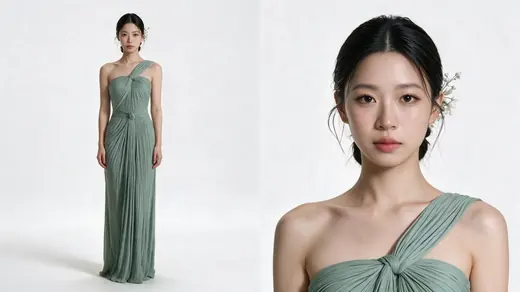
Character sheet人物表
+
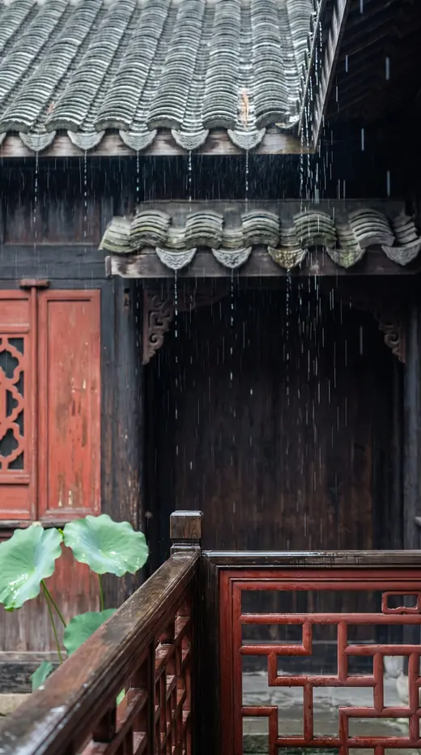
Location场景图
=
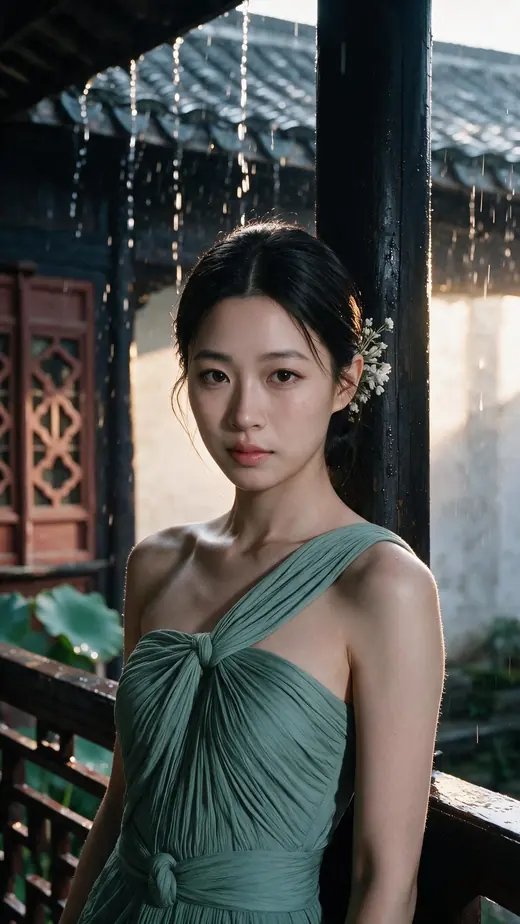
The still静帧
character
Photorealistic character reference sheet, two views on one canvas, white studio, for identity and costume lock.
IDENTITY
Reference image 1 is the only source of her face. The same woman, unchanged: facial structure, eye shape and spacing, brows, nose, lips, jawline, skin texture, and the natural asymmetry between the two halves of her face. Dark brown eyes, alive, looking into the lens. Her head sits square to the camera at the same angle as that image, chin level. Narrow eye spacing, a skull that stays slim at the sides, small ears set flat against the head, a slender neck held upright over the shoulders.
Reference image 2 has its face blurred out on purpose and shows a different person. Take from it the gown and the hair. Ignore her face, her background, her courtyard and her lighting.
Reference image 3 has its face blurred out on purpose and shows a different person. Take from it the neckline construction, the hair ornament and the makeup tone. Ignore her face, her background and her lighting.
GOWN
A floor-length gown in soft sage celadon green, a muted desaturated grey-green, never a bright cyan or turquoise. The fabric is fine matte jersey silk, finely and densely pleated all over in close vertical folds that follow the body.
The cut is asymmetric: the fabric rises over her LEFT shoulder in a single wide strap and her RIGHT shoulder and arm are completely bare. At the centre of the chest the pleats gather and twist through a soft knotted loop of the same fabric, the drape pulling through it before falling away.
From the knot the pleats fall straight into a long narrow skirt that reaches the floor.
The same gown appears in both views, matching detail for detail.
HAIR
Her own near-black hair, smoothed back off the face and gathered into a low twist at the nape, slightly damp and glossy, with a few fine strands clinging along her cheek and temple.
HAIR ORNAMENT
A small spray of white porcelain flowers pinned into the twist just above and behind one ear, tiny petals and buds on fine silver stems, sitting against the dark hair with a few loose strands falling over it. Her ears are bare, with no earrings of any kind.
MAKEUP
Clean translucent skin with real highlights down the bridge of the nose and across the cheekbones, dewy rather than powdered.
Fine, softly arched light-brown brows.
Eyes are the focus: a pronounced highlight along the lower lash line so the under-eye reads plump, the inner corner brightened, a fine dark liner close to the lash line lifting slightly at the outer corner, long separated lashes.
A barely-there pink blush close to the inner cheek.
Lips a maple rose-red, mostly matte with a faint sheen in the centre, the cupid's bow clearly drawn.
LAYOUT
Two views side by side on one continuous seamless pure white background, generous clean space between them.
LEFT: full body with headless framing, cropped cleanly at the collarbones and empty white above the neck. The single shoulder strap, the bare right shoulder, the knotted neckline, the pleats and the full length of the gown down to the hem. The figure occupies about 89% of the frame height, placed a quarter of the width from the left edge. Eye-level camera, natural perspective. She stands square to camera at ease, arms loose at her sides, a faint contact shadow under her.
RIGHT: a large frontal portrait filling the right half, from the crown of her head down to the chest, fully frontal with both ears equally visible and her eyes into the lens. The low twist, the damp strands at her cheek, the white flower hair pin, the single strap, the bare right shoulder and the knotted neckline all clearly visible. The face is the dominant detail and is sharply resolved.
LIGHT
A soft ambient wash as if the whole space sits under a broad overcast sky, directionless and calm, the same in both views, shadows open and transparent, the background staying clean white. Neutral white balance and accurate colour: the green reads as muted sage, never bright. Visible pores, fine facial hairs, real skin texture, individual hair strands, the pleats reading as real fine fabric.
POSITIVE CONSTRAINTS
Exactly two views, one identity, one identical outfit.
The green is a muted sage celadon.
The gown is asymmetric with the left shoulder strapped and the right shoulder bare, in both views.
Her ears are bare, with no earrings; the white flowers are pinned in her hair.
Only one face appears in the whole image, in the right view, and it is the woman from reference image 1.
No rain, no courtyard, no scenery, no props.
No third panel, no side-profile panel, no additional people, no text, no labels, no logos, no watermark.
location
SCENE CONTEXT
A location plate for a vertical short film. This is a background reference of a place, used to lock the environment before the character is composited in. Photorealistic, shot on location, not a render and not an illustration.
FRAMING
Vertical 9:16 frame. This is a TIGHT, CLOSE shot. Everything in it is within about 5 metres of the camera.
The camera is at standing eye level, about 1.6 metres above the floor, and perfectly level: every vertical edge stays vertical and parallel, never converging, never leaning. A normal lens, the angle of view of a 50 mm, natural perspective, no wide-angle stretch.
The camera stands on the open second-floor walkway of an old Chinese timber building, about 2.5 metres from a wooden handrail. A person will later stand at that handrail with a hand resting on it, framed from the hip up, filling most of the height of the frame.
The empty centre of the frame is kept clear for her: a vertical column of open space running from the handrail near the bottom all the way up to the tiled eave at the top. Nothing crosses it.
WHAT IS IN THE FRAME, FROM TOP TO BOTTOM
Top quarter of the frame, very close to the camera: the underside and front edge of a grey clay tiled roof, large and dominant, its rows of curved tiles and individual tile ends clearly readable, weathered and soaked. Rain runs off its rim and falls in strings of bright drops. It is slightly soft but still detailed.
Just below it, crossing the frame around one third down: a second, lower roof edge belonging to the building opposite, its dark timber eave carrying carved decorative brackets in a repeating row. Dark, wet, softly out of focus. Its tile line sits only a little above where a standing person's head will be.
The middle of the frame, from 3 to 5 metres: a dark timber wall of old weathered wood, deep brown going to near black, soft and out of focus. This dark wall is the backdrop the person will read against. Bright silver rain streaks fall across it everywhere, and they are the brightest thing in that part of the picture.
At the LEFT, around 3 metres: a tall panel of worn vermilion red painted woodwork with a carved cut-out pattern, soft and out of focus, giving the picture one warm accent.
At the LEFT, around 2.5 metres and lower: two or three large green lotus leaves leaning in, wet and bowing under the rain, soft.
Entering from the LEFT EDGE at about four fifths down the frame: a dark wooden handrail, wet and glossy with a long bright highlight along its top edge, running horizontally toward the centre. It is close and its wood grain is visible.
In the BOTTOM RIGHT corner, closest of all: a section of red lacquered lattice railing, its carved geometric openings large in frame, the old vermilion paint worn and damp.
COLOUR
Dark brown-black wet timber, grey-green roof tile, worn vermilion lacquer, fresh green lotus, pale silver rain. Cool and desaturated overall but alive, never monochrome grey, never blue-green, never teal.
LIGHTING
Soft daylight arriving from in front of the camera. The architecture is dark and the rain is bright: every falling streak reads as a pale silver line against the dark timber, and every wet edge, the handrail, the tile ends, the lotus leaves, carries a clean specular highlight.
The empty centre column sits in a pocket of that light, clearly brighter than the dark wall behind it, so a person standing there would be evenly lit in the face and would separate from the building.
Strong contrast between dark wood and luminous rain, with transparent shadows that keep detail instead of going flat black.
Atmospheric and alive. Never flat, never muddy, never uniformly grey, never gloomy or depressing.
PHYSICS
Rain falls steadily, almost straight down with a slight slant. It runs along the tile channels and drips from both eaves in separate strings, runs along the top of the handrail, bursts into small splashes on the rail and the lattice, and makes the lotus leaves dip and spring back. Nothing is frozen, nothing is still.
CONSTRAINTS
No people, no figures, no silhouettes, no animals.
There is NO sky anywhere in the frame and no bright open gap between the roofs. The background is entirely dark timber and tile.
This is a tight close shot: nothing is further than about 5 metres, and no whole building, courtyard or walkway is visible.
The tiled eave at the top is close and large, filling the top quarter of the frame.
The handrail enters from the left edge low in the frame and is close enough that its wood grain is visible.
The camera is at standing eye level and perfectly level, with all vertical edges staying vertical.
The centre column of the frame is empty and unobstructed from the handrail up to the top eave.
No distant landscape, no horizon, no receding corridor, no floorboards stretching away.
No lanterns, no signage, no calligraphy, no text, no labels, no logos, no watermark, no border, no colour bars.
still 1
Same woman, same dress, same courtyard as the attached images. This time a waist-up close up, not a full-length shot.
THE MOMENT. She has been sheltering from the rain, leaning back against the post, and she has just recognised someone across the courtyard. There are other people around, so she keeps it to herself. The smile is faint and private, almost not there, and it lives in her eyes while her mouth stays nearly closed and her cheeks stay relaxed. Composed, knowing, a little guarded. She holds the gaze steadily.
WHAT SHE IS WEARING IN HER HAIR. A spray of small white flowers tucked into her hair just above her ear, and the small earrings, exactly as in the character sheet. These must be present and clearly visible.
POSE. Weight on one leg so her hips settle to one side and her shoulders sit at slightly different heights. Her back and shoulder rest lightly against the post behind her. Torso turned a little off the camera axis, face coming back toward the lens. Hands stay off the railing. Both shoulders stay in frame.
FRAMING. Vertical 9:16, waist up. A small gap above her hair, the bottom edge of the frame at her waist. 135mm lens from several metres back so the perspective stays flat. The dark timber, the tiled eaves, the red lattice and the lotus leaves stay where they are and stay slightly soft. Do not redesign the background.
WEATHER AND LIGHT. It is a sunshower. Rain is falling steadily and the sun is out at the same time, late afternoon, low, coming into the courtyard from one side. The sunlight actually lands on things: it runs across the wet roof tiles, it lights the far wall of the courtyard behind her so the depth opens up, and it catches the falling rain and the water pouring off the eaves so they read as bright threads. Warm sun against the cool grey of the rain. The courtyard is bright and alive, not a dark overcast day.
This is weather, not a lighting setup. No studio lights, no key and rim scheme, no bright outline traced around her hair, and do not darken the background to make her stand out. Expose it normally, the way a camera would, and keep the full range of mid-tones in her skin, in the wet timber and in the roof tiles.
Real photographic skin with visible pores and texture, fine stray hairs, natural film grain. No airbrushing, no plastic sheen, no engineered contrast.
still 2
Two images are attached.
Image 1 is the photograph.
Image 2 is the woman whose face must appear in it.
Keep image 1 exactly as it is and change only her face.
Replace the face in image 1 with the face of the woman in image 2. Take her bone structure, the shape and spacing of her eyes, her eyelids, the bridge and tip of her nose, the shape of her mouth and the shape of her jaw and chin from image 2. Her face is wide relative to its length, not long and narrow. The lower third of her face, from the base of her nose to the bottom of her chin, is short. Her chin is small and softly rounded.
Nothing else changes at all. Same framing, same crop, same camera position, same pose, same angle of her head, same hair with every strand in the same place, same hair ornament, same dress, same shoulders, same background, same rain, same light and the same direction of light, same colour, same grain. Her head stays exactly the same size and in exactly the same place in the frame.
Keep the expression that is already there and keep the lighting on her face as it already is: the same shadows in the same places, the same highlights. Only the features change, not the light.
Real photographic skin with visible pores and texture, natural film grain. No airbrushing, no plastic sheen, no smoothing, no re-rendering of the scene.
video
The attached image is the locked still for SHOT 5, CYAN. Do not regenerate it, do not restyle it, and do not change her face, her expression, her hair, her hair ornament, her dress or the courtyard. Use it exactly as it is, as the first frame.
Her shoulder shifts a fraction against the post she is leaning on, and her head tilts very slightly to one side partway through. Her hands stay out of frame.
The rain keeps falling steadily, and water keeps running off the eaves in thin bright threads. The lotus leaves move very slightly.
She holds one faint private smile the whole way through: lips closed, the warmth in her eyes, steady eye contact with the lens. She never breaks into a wider smile.
No other people, no new objects, no cuts. Generate no audio.
GREEN
jade stream + forest fairy翡翠溪流 + 森林精灵
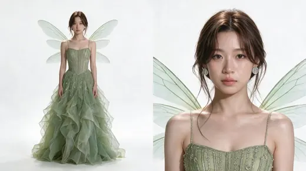
Character sheet人物表
+
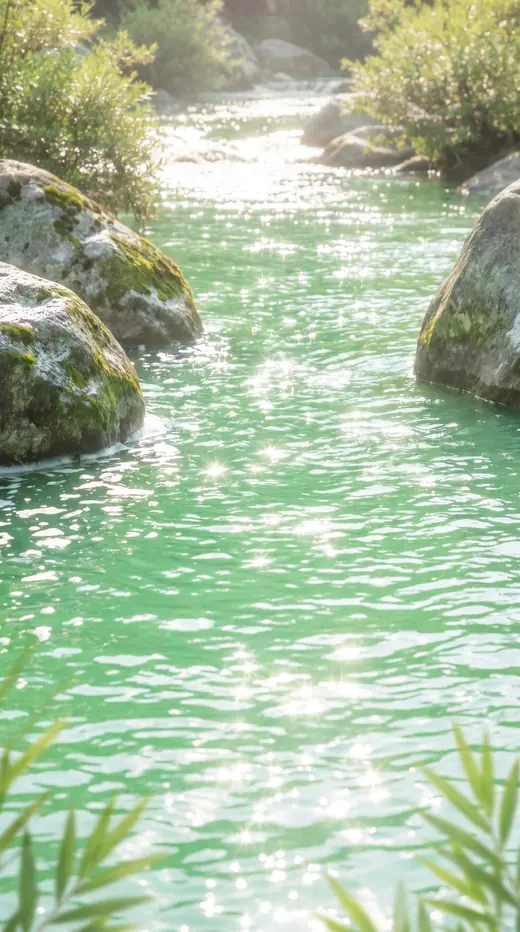
Location场景图
=
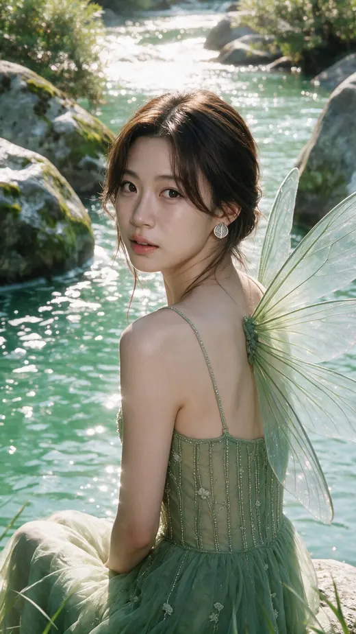
The still静帧
character
Photorealistic character reference sheet, two views on one canvas, white studio, for identity and costume lock.
IDENTITY
Reference image 1 is the only source of her face. The same woman, unchanged: facial structure, eye shape and spacing, brows, nose, lips, jawline, skin texture, and the natural asymmetry between the two halves of her face. Dark brown eyes, alive, looking into the lens. Her head sits square to the camera at the same angle as that image, chin level. Narrow eye spacing, a skull that stays slim at the sides, small ears set flat against the head, a slender neck held upright over the shoulders.
Reference images 2, 3 and 4 all have their faces blurred out on purpose and show a different person, from the same photo shoot. Take from them only the gown, the hair shape and the skin finish. Ignore her face, the water, the background and the sunlight.
Reference image 2 shows the whole gown and the overall hair shape. Reference image 3 shows the beading on the bodice up close. Reference image 4 shows how the hair falls around the face.
GOWN
A gown in soft moss green with a cool grey undertone. The bodice is a fitted corset with vertical boning lines, covered in fine silver bead embroidery that runs in narrow columns with small raised flowers scattered between them, catching light in tiny points. It is held by thin delicate straps over bare shoulders. A fine beaded choker sits at the base of the throat.
From the bodice the skirt opens into many layers of pale green silk organza, crisp and semi-transparent, gathered into deep soft waves with real volume that spreads around her feet.
The same gown appears in both views, matching detail for detail.
WINGS
A pair of delicate fairy wings opening behind her shoulder blades, like dragonfly wings: thin, translucent membranes in the palest celadon green, veined with fine darker lines, the edges catching a faint iridescent shimmer. They are light and slightly uneven, a longer upper pair and a shorter lower pair, standing open and low rather than reaching above her head. Weightless and otherworldly, never feathered, never solid, never costume-like.
HAIR
Her hair is a medium chestnut brown, clearly brown rather than black, not light and not ashy, with deeper brown in the shadows and warm highlights where light catches it.
Soft and airy with real lift at the roots, loosely swept up at the back so it reads as volume around the head rather than a tight style.
Curtain bangs fall across her forehead, parted in the middle and lengthening at the sides, the ends soft and slightly separated so they brush her brows and cheekbones.
On each side of her face a few longer loose strands drop down past her jaw, light enough to lift and curl in the air.
Fine flyaway hairs catch the light all around the hairline.
The whole effect is undone and languid, never neat, never sprayed, never flat.
EARRINGS
One silver stud in each ear, sitting flat against the earlobe: a small rounded disc of brushed and engraved silver, its surface carved with a fine organic pattern of thin curving lines like veins or leaf ribs, catching light along the raised edges. Roughly the size of the earlobe. It does not hang or swing.
MAKEUP
Bare and dewy with a real wet sheen on the skin, visible pores, no powder.
Soft light-brown brows.
Eyes undone: no eyeshadow colour and almost no liner, the lower lashes drawn in individually and clearly readable against the skin, the inner corners brightened.
Almost no blush.
Lips a natural nude-pink with a glassy wet shine, the natural lip line still showing through.
LAYOUT
Two views side by side on one continuous seamless pure white background, generous clean space between them.
LEFT: full body with headless framing, cropped cleanly at the collarbones and empty white above the neck. Both bare shoulders, the thin straps, the beaded corset bodice, the open fairy wings behind her and the full layered organza skirt down to the hem. The figure occupies about 89% of the frame height, placed a quarter of the width from the left edge. Eye-level camera, natural perspective. She stands square to camera at ease, arms loose at her sides, a faint contact shadow under her.
RIGHT: a large frontal portrait filling the right half, from the crown of her head down to the chest, fully frontal with both ears equally visible and her eyes into the lens. The airy brown volume, the curtain bangs, the loose strands at both sides of her face, the flyaway hairs, the engraved silver studs, the dewy skin, the glassy lip, the beaded choker, the thin straps and the top of the bodice all clearly visible, with the upper edges of the wings showing behind her shoulders. The face is the dominant detail and is sharply resolved.
LIGHT
A soft ambient wash as if the whole space sits under a broad overcast sky, directionless and calm, the same in both views, shadows open and transparent, the background staying clean white. Neutral white balance and accurate colour: the green reads as soft moss, the organza reads sheer, the silver reads as metal, the wings read as translucent membrane. Visible pores, fine facial hairs, real skin texture, individual hair strands.
POSITIVE CONSTRAINTS
Exactly two views, one identity, one identical outfit.
Her hair is medium chestnut brown in both views.
The wings are thin, translucent and pale celadon, like a dragonfly's.
The earrings are engraved silver studs sitting flat on the earlobe.
The bodice is a beaded corset on thin straps and the skirt is layered sheer organza, in both views.
Only one face appears in the whole image, in the right view, and it is the woman from reference image 1.
No feathers, no water, no rocks, no scenery, no props.
No third panel, no side-profile panel, no additional people, no text, no labels, no logos, no watermark.
location
SCENE CONTEXT
A location plate for a vertical short film. This is a background reference of a place, used to lock the environment before the character is composited in. Photorealistic, shot on location, not a render and not an illustration.
FRAMING
Vertical 9:16 frame.
Shot on a SHORT TELEPHOTO lens, the angle of view of an 85 mm, stopped down so that every bright specular point on the water bursts into a sharp multi-pointed STAR of light.
The camera is LOW and LEVEL: the lens sits only about 1.2 metres above the water and looks straight across the surface, parallel to it. It is NOT looking down. Because of this the water is seen almost edge on, strongly foreshortened, and the surface fills the frame as a flat field of reflection rather than as a stretch of ground seen from above.
Proof that the angle is right: the riverbed, the underwater stones and the sand are NOT visible anywhere in the picture. You cannot see into the water at all. You see only the surface and what it reflects. If any part of the bottom is visible, the camera is too high.
The camera stands in the water, about 4 metres from a clear open spot where a person will later stand waist deep, framed from the waist up, filling most of the height of the frame.
Shallow depth of field: the standing spot is sharp, everything behind it is soft.
The empty centre of the frame is kept clear for her: a vertical column running from the bottom of the frame to the top edge, with only open sparkling water in it.
WHAT IS IN THE FRAME
The background, filling the upper two thirds and the whole centre, is the surface of a wide stretch of water seen edge on. No sky, no horizon, no far bank.
Its colour is BRIGHT, CLEAR, LUMINOUS JADE GREEN: a light spring green with a touch of blue in it, the colour of strong sunlight passing through clean shallow water over pale stone. It is high in brightness and clean in saturation all the way across, glowing from within rather than sitting dark.
There are no dark patches, no deep bottle-green areas and no shadowed bands anywhere in the water. The darkest part of the water is still a bright clear green.
Scattered across that surface, densest right behind where the person will stand: hundreds of brilliant white SPARKLES, each one a sharp multi-pointed star of light where the sun catches a ripple. The nearer ones are large and soft, the further ones small and crisp. They are the brightest thing in the picture and they fill the background like scattered glitter.
At the LEFT and the RIGHT, standing out of the water and framing the open centre: several large rounded boulders of pale grey stone, wet and glossy, their tops crowned with bright fresh green moss. The nearest ones, about 2 metres away, are large and soft at the edges of frame; two more sit further back, smaller and softer, continuing the line but never meeting in the middle. Light catches their wet shoulders in long bright highlights.
Water curls and breaks white around the base of each boulder, throwing small bursts of foam and spray that also catch the light as stars.
At the upper LEFT and upper RIGHT corners only, far back: low leafy shrubs in fresh bright green, small in the frame and very soft, with sunlit leaves glowing among them.
Entering the very bottom corners, close to the camera: a few tips of fresh green leaves, heavily out of focus and brightly lit.
COLOUR
Bright clear jade and spring green, pale grey wet stone, vivid green moss and leaves, pure white sparkles and foam. Clean, light and luminous throughout.
Never olive, never bottle green, never yellow-brown, never grey-green, never murky, never swampy, never stagnant. Nothing in the frame reads as dirty water or algae.
No brown, no dead branches, no dry twigs, no fallen leaves, no bare wood anywhere.
LIGHTING
Strong sunlight coming across the water from one side and slightly behind, striking the ripples at a low angle so the surface erupts in star sparkles and the wet stone carries bright rim highlights. Warm light reflects back up off the water and fills the space in front of the camera, so a person standing there would be lit from below and from the side and would never read as a silhouette.
Fine haze and gentle bloom around the brightest sparkles. A dreamlike glow sits over the whole image, and the overall exposure is bright and airy.
Luminous and ethereal. Never dark, never flat, never murky, never heavy.
PHYSICS
The water moves: small ripples travel outward and cross one another, the sparkles shift and flicker, and the current breaks white around the boulders with foam sliding away. The near leaves and the far shrubs stir in a light breeze. Fine mist and spray hang low over the water and catch the light. Nothing is frozen, nothing is still.
CONSTRAINTS
No people, no figures, no silhouettes, no animals, no boats.
The camera is low and level, looking straight across the surface. It is never looking down at the water. No part of the riverbed, the underwater stones or the sand is visible anywhere.
The water is bright, clear, luminous jade green everywhere, with no dark or shadowed areas and nothing that reads as dirty, stagnant or algae-filled.
The centre of the frame, directly behind where the person will stand, is open sparkling water only. No boulder, no shrub and no leaf crosses it.
The boulders sit at the left and right edges and never join into a wall across the back.
The sparkles are sharp multi-pointed stars, dense and bright, and are the brightest element in the picture.
No brown, no dry branches, no dead wood, no fallen leaves.
No sky, no horizon, no shoreline, no distant landscape, no forest, no path, no buildings.
No text, no labels, no logos, no watermark, no border, no colour bars.
still
Same woman as the attached references. A close shot.
THE PLACE COMES FROM THE ATTACHED SCENE PLATE. A mountain stream running clear jade green, bright sunlight breaking into sharp sparkles all over the water, large pale boulders furred with moss, leafy shrubs along the bank, fine blades of grass coming into the very front of the frame. Keep that place and that light exactly as they are. Do not redesign the background.
COMPOSITION. She is sitting low on one of the mossy boulders right beside the water, close to the surface. Her body is turned away from the camera, angled toward the stream. The sparkling water fills the space behind and beside her, and some moss covered rock reads clearly in frame.
HER POSE AND GAZE. She is glancing back. Her body stays turned away while her head comes round toward the lens and keeps coming until her face is nearly frontal, not a three quarter view. The glance-back feeling comes from the angle of her body, not from the angle of her face. She looks straight down the lens.
THE MOMENT. She is a sprite, light and quick and full of life. Her eyes are wide awake and shining, the single brightest thing about her, with her lower lids lifted. Her lips are parted just slightly in a natural easy smile, the mouth barely open, caught mid breath rather than posed. Warm, mischievous, alive. The expression is set from the first frame and does not change.
HER FACE. Her bone structure, the spacing between her eyes, the bridge of her nose and the shape of her jaw come from the neutral portrait. Her face is wide relative to its length, not long and narrow. The lower third of her face, from the base of her nose to the bottom of her chin, is short. Her chin is small and softly rounded. Her skin is smooth and young with no deep lines.
WINGS, HAIR AND JEWELLERY, exactly as in the character sheet. A pair of translucent insect wings rising behind her shoulders, pale green and faintly iridescent with fine veining, thin enough to see the stream through them. They may run off the edges of the frame. Soft brown hair gathered up loosely with fine strands falling around her face and neck. Silver leaf shaped stud earrings.
WARDROBE. A moss green sheer tulle gown on fine spaghetti straps, with vertical lines of beading and small embroidered flowers, exactly as in the character sheet.
FRAMING. Vertical 9:16. A close shot, not a medium shot. The bottom edge of the frame sits just below her bust. Her face takes about a third of the frame height. 135mm lens at her eye level, natural perspective, no wide-angle distortion.
WIND AND WATER. A light breeze lifts the loose strands around her face. The water moves and the sparkles on it shift. Light bounced up off the stream touches the underside of her jaw and her wings.
SHE IS BEING PHOTOGRAPHED AND SHE IS GOOD AT IT. Her ease is a trained ease, held rather than slack: shoulder blades drawn back and down away from her ears, chest open, the back of her neck long, spine lifted. Nothing slumped or hunched, shoulders never rolling forward.
Bright natural daylight, the real light of that stream. No studio lights, no key and rim scheme, no engineered contrast. Expose normally and keep the full range of mid-tones in her skin, the green tulle and the moss.
Real photographic skin with visible pores and texture, fine stray hairs, natural film grain. No airbrushing, no plastic sheen.
video
The attached image is the locked still for SHOT 6, GREEN. Do not regenerate it, do not restyle it, and do not change her face, her expression, her hair, her wings, her dress or the stream. Use it exactly as it is, as the first frame.
She stays glancing back over her shoulder exactly as she is. She does not turn her head further round and she does not turn away.
Her wings move very slightly, a slow shiver of the thin membrane, catching the light. They shiver when a gust hits them and settle when it passes. They do not flap and they do not lift her.
The stream keeps running and the sparkles on the water shift and travel. The breeze moves the grass in the foreground.
Her expression never changes from the one in the still: bright shining eyes on the lens, lips just parted, alive and a little mischievous. Her mouth does not open wider and she does not break into a grin.
Two wings, no more. No other people, no new objects, no cuts. Generate no audio.
WHITE
snow forest + white feathers雪林 + 白羽
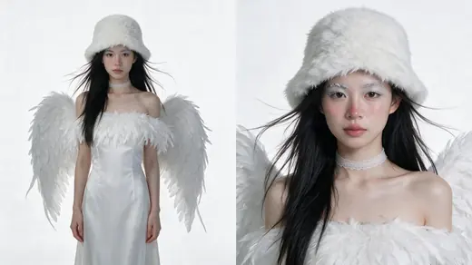
Character sheet人物表
+
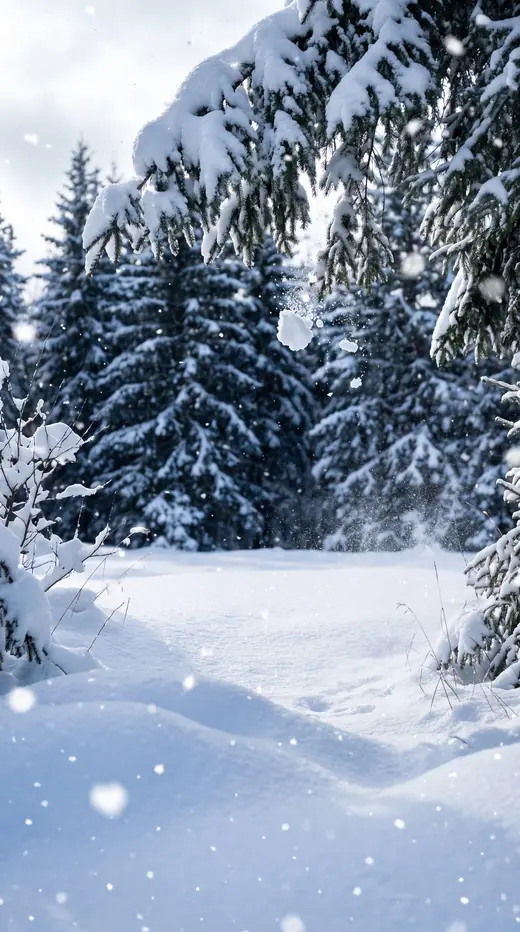
Location场景图
=
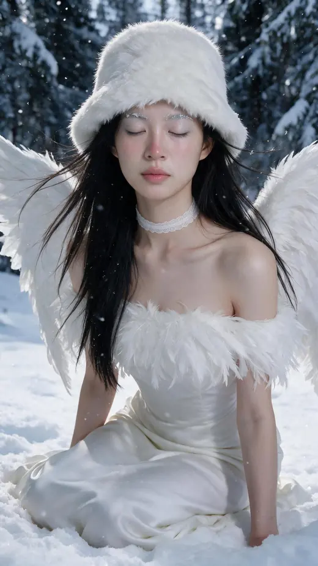
The still静帧
character
Photorealistic character reference sheet, two views on one canvas, white studio, for identity and costume lock.
IDENTITY
Reference image 1 is the only source of her face. The same woman, unchanged: facial structure, eye shape and spacing, brows, nose, lips, jawline, skin texture, and the natural asymmetry between the two halves of her face. Dark brown eyes, alive, looking into the lens. Her head sits square to the camera at the same angle as that image, chin level. Narrow eye spacing, a skull that stays slim at the sides, small ears set flat against the head, a slender neck held upright over the shoulders. The same face in both views, recognisably the same person in the small full-body view as in the close portrait.
Reference images 2 and 3 have their faces blurred out on purpose and show a different person, from the same photo shoot. Take from them only the wings, the feathered garment and the lace choker. Ignore her face, the snow, the sea, the background and the lighting.
WINGS
A full pair of white feathered wings opening behind her shoulder blades, built from many layered real feathers in graded sizes, long primary feathers at the outer edges and soft downy ones close to her back. They open wide and low to the sides rather than reaching above her head, slightly uneven and alive, each feather catching a little light along its edge.
GARMENT
A strapless white gown: a smooth fitted bodice in fine white silk, and across the chest and shoulders a wide collar of soft white feathers that lies against the skin and follows the neckline. The skirt falls long and plain in soft white silk to the floor.
A narrow white lace choker sits high on the throat, scalloped at the edges.
The same outfit appears in both views, matching detail for detail.
THE HAT
A white faux-fur bucket hat made of very long, very soft pile, the kind that moves with the slightest air. The fur is thick and cloud-like, the individual fibres long enough to break the outline of the hat so its silhouette reads fuzzy and soft rather than a clean shape, with stray fibres catching light all around the edge. The crown is shallow and slumps gently under its own weight, sitting low and close to the head rather than standing tall. The brim is short and turned down all the way round, dipping lowest at the centre front to just above her eyebrows so the hat frames her face. Her eyes stay clearly visible beneath the brim. Deep, airy and plush, never dense, never flat, never short-pile.
She wears this hat in both views.
HAIR
Her own near-black hair worn long and straight, glossy and smooth, falling forward over both shoulders and down the front of her body so her back stays clear for the wings. Air moves through it: many fine strands lift away from the length and float out to the sides, catching the light, and a few loose pieces cross her cheeks. Natural and windblown, not styled flat against the head.
MAKEUP
Cool porcelain skin, matte with a fine shimmer across the cheekbones.
The skin looks lightly touched by cold: a soft pink flush sits on the tip and sides of the nose and across the cheeks, warm pink showing through pale skin rather than sitting on top of it, blended with no edges. The nose is the pinkest point, the cheeks a little softer, and the rest of the face stays cool and pale so the contrast reads. A faint pink also touches the earlobes and the chin.
Brows combed flat and dusted with a fine white frost, the tiny crystals catching light along the hairs.
A pale ice-blue to silver pearl shadow washed across the whole upper lid and pulled out past the outer corner, a fine dark liner, curled lashes with frost on the tips.
Lips a cool muted rose, matte.
LAYOUT
Two views side by side on one continuous seamless pure white background, generous clean space between them.
LEFT: the complete figure from the top of the fur hat down to the hem of the skirt, nothing cropped, with clear empty white space above the hat and below the hem. She wears the fur hat here. The hat, her long hair, the lace choker, the feather collar, the white silk bodice, the skirt to the hem and the full wings open behind her are all visible. The figure occupies about 89% of the frame height, placed a quarter of the width from the left edge. Eye-level camera, natural perspective, no wide-angle distortion, the head and hat in correct proportion to the body and never oversized. She stands square to camera at ease, arms loose at her sides, a faint contact shadow under her. Her face here is small but still clearly hers, the same face as in the portrait, calm and sharply resolved rather than soft or smeared. Add a faint cool grey edge behind her so the white costume separates from the background.
RIGHT: a frontal portrait on the right half, cropped at the chest at the bottom, fully frontal with both ears equally visible and her eyes into the lens. The entire fur hat stays inside the frame with a clear band of empty white above it, nothing touching or crossing the top edge of the canvas; leave the portrait slightly smaller rather than let any part of the hat or the head be cut off. The whole soft fuzzy hat, the floating strands of hair, the cold pink on her nose and cheeks, the frost on her brows and lashes, the ice-blue shimmer on her lids, the lace choker, the feather collar and the upper edges of the wings behind her shoulders are all clearly visible. The face is the dominant detail and is sharply resolved.
LIGHT
A soft ambient wash as if the whole space sits under a broad overcast sky, directionless and calm, the same in both views, shadows open and transparent, the background staying clean white with only a faint grey separation behind the figure. Neutral white balance and accurate colour: the whites read as different whites, the feathers read as real feathers, the fur reads as long loose pile. Visible pores, fine facial hairs, real skin texture, individual hair strands.
POSITIVE CONSTRAINTS
Exactly two views, one identity, one identical outfit.
The fur hat is on her head in both views.
Both heads are complete and fully inside the canvas, with empty white space above each hat.
The face in the full-body view is the same woman as the face in the portrait and as the woman in reference image 1.
The hat is long-pile, cloud-soft and slouchy, its outline broken by stray fibres, with the front brim just above her eyebrows.
Fine strands of her hair lift and float in the air.
Her nose and cheeks carry a soft cold-flushed pink against otherwise pale cool skin.
The feathered wings appear in both views, always behind and below the shoulder line.
Only one woman appears in the whole image and she is the woman from reference image 1.
No snow, no sea, no scenery, no blindfold, no ribbon, no props.
No third panel, no side-profile panel, no additional people, no text, no labels, no logos, no watermark.
location
SCENE CONTEXT
A location plate for a vertical short film. This is a background reference of a place, used to lock the environment before the character is composited in. Photorealistic, shot on location, not a render and not an illustration.
FRAMING
Vertical 9:16 frame.
Shot on a SHORT TELEPHOTO lens, the angle of view of an 85 mm. The background is magnified and compressed so that it sits close behind the subject and fills the frame, the way a portrait lens renders a place. Not a wide lens, not a standard lens, no wide-angle stretch and no deep receding perspective.
The camera is at standing eye level, about 1.6 metres above the snow, and perfectly level: every vertical edge stays vertical and parallel, never converging, never leaning.
The camera stands about 4 metres from a clear patch of untouched snow where a person will later stand, framed from the waist up, filling most of the height of the frame.
The background begins only about 3 metres BEHIND that standing patch. There is no open empty ground between the standing patch and the background. The scene closes in right behind her.
Shallow depth of field: the standing patch is sharp and everything behind it is soft.
The empty centre of the frame is kept clear for her: a vertical column of open space running from the near snow at the bottom all the way to the top edge. Nothing crosses it.
WHAT IS IN THE FRAME, FROM NEAR TO FAR
From the bottom edge up to the standing patch: deep fresh snow in soft drifts, sculpted by the wind into gentle curves, sparkling with fine ice crystals, clean pale blue shadows in the dips. A few frosted grass stems and a snow-laden branch tip enter at the left and right edges, close and very soft.
The centre: a clear patch of smooth untouched snow where the person will stand, open and unobstructed, and the brightest part of the picture.
Immediately behind it, only 3 metres back and filling the ENTIRE background from the bottom of the frame to the top: snow-laden evergreen firs standing close together, their boughs heavy with thick fresh snow, rendered large and soft by the telephoto lens. They form a continuous wall of snow and dark green needles right behind her, close enough that no ground is visible between her and them. Their dark needles show through the snow in patches, clearly darker than the snow, so a figure dressed in white separates cleanly from them.
Falling snow fills the entire frame: distinct individual flakes near the camera rendered as large soft out-of-focus white dots, smaller sharper flakes further back, all drifting across and down.
COLOUR
Cool and clean: bright near snow, deep blue-green fir needles under their snow load, soft blue shadows. Crisp and luminous, never grey mud, never yellowed, never warm.
LIGHTING
Bright diffuse daylight through a thin overcast, coming from slightly to one side so the near drifts keep their modelling and texture. The near snow sparkles with tiny points of light. The trees behind sit in softer, flatter light.
The empty standing patch is the brightest part of the picture, so a person standing there would be evenly and clearly lit in the face and would separate from the trees behind.
Luminous and cold, with bright whites that still hold detail and never blow out, and transparent blue shadows that never go grey or black.
PHYSICS
Snow falls steadily, flakes drifting sideways on a light breeze rather than dropping straight. The loaded boughs sag and occasionally shed a soft puff of snow. Loose surface snow lifts off the drifts and streams low across the ground. Nothing is frozen, nothing is still.
CONSTRAINTS
No people, no figures, no silhouettes, no animals, no footprints.
Shot on a short telephoto, the angle of view of an 85 mm, with a compressed background that sits close behind the subject.
The snow-laden trees begin only about 3 metres behind the standing patch and fill the whole background. There is NO open snowfield, NO clearing and NO empty ground between the standing patch and the trees.
The camera is at standing eye level and perfectly level, with all vertical edges staying vertical.
The centre column of the frame is empty and unobstructed.
Visible falling snowflakes are present everywhere in the frame, with the near ones large and soft.
No distant landscape, no mountains, no horizon, no sky, no sun.
No cabins, no fences, no paths, no tracks, no text, no labels, no logos, no watermark, no border, no colour bars.
still 1
Same woman as the attached neutral portrait. A close shot.
HER FACE COMES ONLY FROM THE NEUTRAL PORTRAIT. The character sheet is attached for the costume, the hat, the wings, the hair and the makeup only. Do not take her face from the character sheet. Her bone structure, the spacing between her eyes, the shape of her eyes and lids, the bridge of her nose and the shape of her jaw all come from the portrait. Her face is wide relative to its length, not long and narrow. The lower third of her face, from the base of her nose to the bottom of her chin, is short. Her chin is small and softly rounded. Her skin is smooth and young with no deep lines.
HER EYES ARE OPEN, looking straight down the lens. Her face is nearly frontal. Steady, direct, clear.
THE PLACE COMES FROM THE ATTACHED SCENE PLATE. A forest of snow laden spruce, deep untouched snow, snow falling steadily, fine snow powder drifting. Cold white winter daylight. Keep that place and that light exactly as they are. Do not redesign the background.
COMPOSITION. She is kneeling in the deep snow, sitting back with her legs folded to one side, so she is low. The camera is down at her eye level and the snow and dark snowy trees rise behind her.
THE MOMENT. She is a spirit of the snow mountain: still, remote, a little cold. Her lips are closed and relaxed with no smile at all. Nothing wistful, nothing sad, nothing posed. Completely calm.
MAKEUP, HAT, WINGS, HAIR AND JEWELLERY, exactly as in the character sheet. Cheeks and the tip of her nose flushed pink from the cold. Fine silver glitter along her brows like frost. A pale icy blue shadow with a silver sheen over her lids. A white long pile faux fur bucket hat. A pair of large white feathered wings rising behind her shoulders; they may run off the edges of the frame. Long straight black hair blown loose, with many fine strands lifting away from her head. A narrow white lace choker high on her throat.
WARDROBE. A white strapless gown with a dense collar of soft white feathers across the bust, over white satin.
FRAMING. Vertical 9:16. A close shot, not a medium shot. The bottom edge of the frame sits just below her bust. Her face takes about a third of the frame height. 135mm lens at her eye level, natural perspective, no wide-angle distortion.
SNOW AND WIND. Snowflakes fall through the frame, some out of focus near the lens. A cold wind lifts her hair and the fur of the hat. A few flakes have settled on her hat, her lashes and her shoulders.
HER POSTURE. Even kneeling she carries herself: shoulder blades drawn back and down away from her ears, chest open, the back of her neck long, spine lifted. Nothing slumped or hunched.
Cold natural daylight, the real light of that forest. No studio lights, no key and rim scheme, no engineered contrast. Expose normally and keep the full range of mid-tones in her skin, the feathers and the snow, so the snow does not blow out to flat white.
Real photographic skin with visible pores and texture, fine stray hairs, natural film grain. No airbrushing, no plastic sheen.
still 2
The attached image is the finished shot. Produce the exact same image with one single change: her eyes are closed.
Nothing else moves. Same framing, same crop, same camera position and distance, same pose, same angle of her head, same hat, same wings, same hair with every strand in the same place, same feathers, same lace choker, same makeup, same flush on her cheeks and nose, same snow, same snowflakes in the same positions, same trees, same light, same colour. It must look like the very same photograph with only her eyelids lowered, not a new photograph of the same scene.
Her eyes close softly and completely, lashes resting down, the lids relaxed rather than squeezed shut. The rest of her face does not move at all. Her brows stay exactly where they are, her mouth stays closed and relaxed with no smile, her cheeks do not rise, her chin does not move.
The expression stays remote and calm, a spirit of the snow mountain. Nothing wistful, nothing sad, no smile of any kind.
Her face is hers and must not change in any way other than the eyelids. Do not reshape her features, do not slim her face, do not enlarge her eyes.
Real photographic skin with visible pores and texture, natural film grain. No airbrushing, no plastic sheen, no re-rendering of the scene.
video
Two images are attached. Image 1, her eyes closed, is the FIRST frame. Image 2, her eyes open, is the LAST frame. They are the same photograph; the only difference between them is her eyelids. If you can take a first and last frame, use them that way. If you can only take one image, use image 1 as the first frame and treat image 2 as the exact look she must arrive at.
Her eyes open. That is the only thing her body does. Her eyelids lift slowly and completely, the lashes rising, until she is looking straight down the lens exactly as she does in image 2. Nothing else on her face moves: her brows stay where they are, her mouth stays closed with no smile, her cheeks do not rise, her chin does not move. She does not turn her head and she does not look away once her eyes are open.
After they open, her head lifts by a tiny amount and then settles, and her chin turns a few degrees to one side.
Her expression stays remote and calm from first frame to last, a spirit of the snow mountain. She never smiles at any point.
Snow keeps falling, some flakes close to the lens and out of focus. The wind lifts the fine strands of her hair and the fur of the hat.
The eyes open fast at first and then slow almost to a stop, so they are fully open well before the end and simply hold there.
She stays kneeling. She does not stand, does not lean and does not shift her body. No other people, no new objects, no cuts. Generate no audio.
PURPLE
misty sea + lilac雾海 + 丁香紫
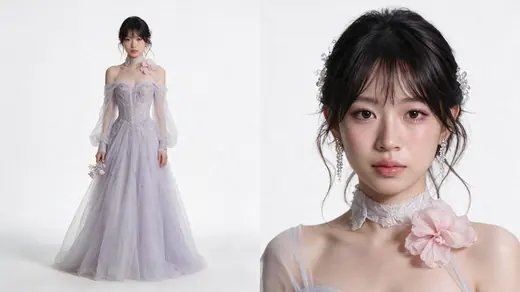
Character sheet人物表
+
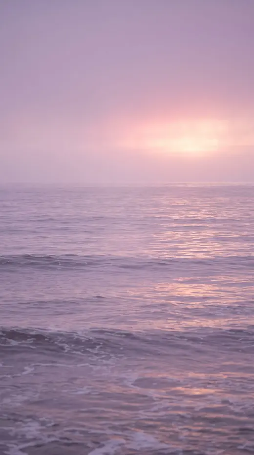
Location场景图
=
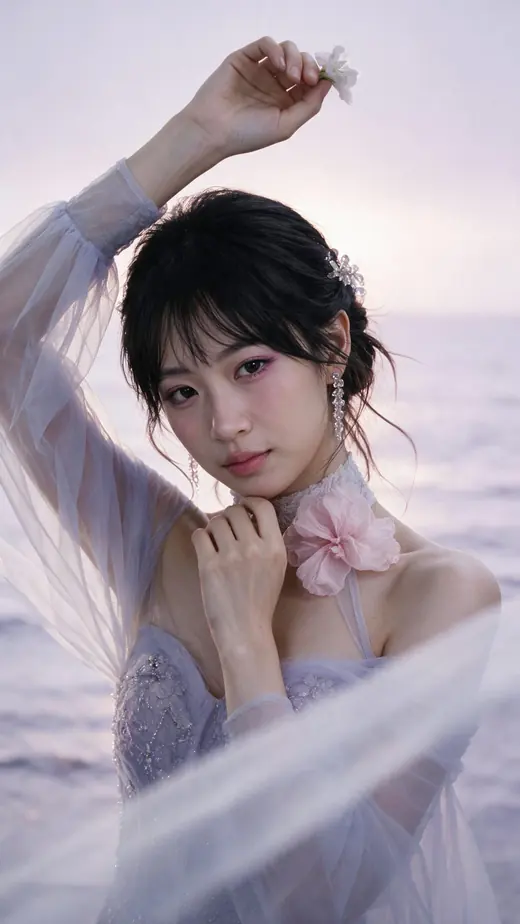
The still静帧
character
Photorealistic character reference sheet, two views on one canvas, white studio, for identity and costume lock.
IDENTITY
Reference image 1 is the only source of her face. The same woman, unchanged: facial structure, eye shape and spacing, brows, nose, lips, jawline, skin texture, and the natural asymmetry between the two halves of her face. Dark brown eyes, alive, looking into the lens. Her head sits square to the camera at the same angle as that image, chin level. Narrow eye spacing, a skull that stays slim at the sides, small ears set flat against the head, a slender neck held upright over the shoulders. The same face in both views.
Reference images 2, 3 and 4 have their faces blurred out on purpose and show a different person, all from the same photo shoot. Take from them only the gown, the hair, the ornaments and the flowers. Ignore her face, the sea, the sky, the background, the haze and the purple colour grade.
Reference image 2 shows the whole gown. Reference image 3 shows the bangs and the hair ornament up close. Reference image 4 shows the earrings, the lace collar and the shoulder flower.
GOWN
A gown in the palest lilac, almost white where the light catches it, built from many layers of fine sheer tulle, soft and weightless so the layers show through one another.
The bodice is fitted and covered in pale silver and lilac bead embroidery with small raised flowers, dense at the chest and thinning as it falls. The neckline sits off the shoulders, the sheer fabric draping across the upper arms.
A high collar of fine white lace rises to the base of the throat, embroidered with the same tiny beaded flowers.
One large soft pink flower with ruffled translucent petals sits on the shoulder where the neckline meets the arm.
Long transparent sleeves run down each arm, gathered at the wrist, scattered with the same beading and embroidered flowers.
The skirt falls full and soft to the floor in drifting layers.
The same gown appears in both views, matching detail for detail.
HAIR
Her own near-black hair, swept up into a soft low chignon with real air in it, never pulled tight. Wispy curtain bangs fall across her forehead, fine and slightly separated. Long loose strands drop at her temples, in front of her ears and along her neck, light enough to lift in the air.
ORNAMENTS
Set into the hair above and behind one ear, a cluster of clear crystal beads shaped into small flowers and buds on fine silver stems, catching light in bright points.
A long crystal tassel earring hangs from each ear, many fine strands of tiny clear beads falling to below the jaw, narrow and delicate, swaying freely.
FLOWERS
In one hand she holds a small loose cluster of pale lilac and white flowers with delicate translucent petals.
MAKEUP
Soft, luminous skin with a dewy finish and visible texture.
Fine soft brows under the wispy bangs.
A pink-lilac shadow washed over the upper lid and carried under the lower lash line, heavier underneath so the eyes read gently flushed, a very fine liner, dense curled lashes drawn in individually.
A pink blush set high on the cheekbone just under the eye, with a trace of fine shimmer.
Lips a rosy nude-pink with a wet gloss, the centre of the lower lip brighter than the edges.
LAYOUT
Two views side by side on one continuous seamless pure white background, generous clean space between them.
LEFT: the complete figure from the top of her head down to the hem of the skirt, nothing cropped. Clear empty white space above her head and below the hem. The figure occupies about 89% of the frame height, placed a quarter of the width from the left edge. Eye-level camera, natural perspective, no wide-angle distortion, the head in correct proportion to the body. She stands square to camera at ease, one hand holding the flowers at her side, a faint contact shadow under her. The lace collar, the off-shoulder neckline, the pink shoulder flower, the beaded bodice, the long sheer sleeves and the full layered skirt are all visible.
RIGHT: a frontal portrait on the right half, fully frontal with both ears equally visible and her eyes into the lens, framed from a little above the top of her hair down to the chest. The entire head stays inside the frame with a clear band of empty white above her hair and above the crystal ornament, nothing touching or crossing the top edge of the canvas. Leave the portrait slightly smaller rather than let any part of the head be cut off. The wispy bangs, the loose strands, the crystal flower ornament in her hair, the long crystal tassel earrings, the lace collar, the pink shoulder flower, the flushed pink eye makeup and the glossy lip are all clearly visible and sharply resolved.
LIGHT
A soft ambient wash as if the whole space sits under a broad overcast sky, directionless and calm, the same in both views, shadows open and transparent, the background staying clean white. Neutral white balance and accurate colour: the lilac reads as pale lilac, the tulle reads sheer, the crystals read as glass. Visible pores, fine facial hairs, real skin texture, individual hair strands.
POSITIVE CONSTRAINTS
Exactly two views, one identity, one identical outfit.
Both heads are complete and fully inside the canvas, with empty white space above each one.
The gown is pale lilac sheer tulle with a beaded bodice, a lace collar, a pink shoulder flower and long transparent sleeves, in both views.
Crystal flowers are pinned in her hair and long crystal tassels hang from her ears.
Only one woman appears in the whole image and she is the woman from reference image 1.
No sea, no sky, no haze, no scenery, no purple colour grade.
No third panel, no side-profile panel, no additional people, no text, no labels, no logos, no watermark.
location
SCENE CONTEXT
A location plate for a vertical short film. This is a background reference of a place, used to lock the environment before the character is composited in. Photorealistic, shot on location, not a render and not an illustration.
FRAMING
Vertical 9:16 frame.
Shot on a SHORT TELEPHOTO lens, the angle of view of an 85 mm. The background is magnified and compressed, so very little of the place fits in the frame: it is mostly just the rippled surface of the open sea, read close and large.
The camera is LOW and LEVEL: the lens sits only about 1.2 metres above the water and looks straight out across the sea, parallel to the surface. It is NOT looking down.
The camera stands in the sea, in water up to its knees, about 4 metres from a clear open spot where a person will later stand knee deep, framed from the waist up, filling most of the height of the frame.
Proof that the angle and the position are right: there is NO dry sand, NO beach, NO shoreline and NO curving line of foam running across the frame. From the bottom edge of the frame all the way to the distant waterline there is nothing but open sea.
The distant waterline sits about two thirds of the way up the frame, around the height of a standing person's head and shoulders, and it is so soft and so low in contrast that it almost disappears, a faint change of tone rather than a drawn line.
Shallow depth of field: the standing spot is sharp, everything behind it is soft.
The empty centre of the frame is kept clear for her: a vertical column running from the bottom of the frame to the top edge, with nothing in it.
WHAT IS IN THE FRAME
From the bottom edge up to that faint waterline, about two thirds of the whole picture, is open sea. The surface is covered in small slow swells and ripples, seen almost edge on so they stack into soft horizontal bands. Low gentle highlights run along their crests. Nearer the camera the ripples are larger and softer, with a few thin threads of white foam sliding over them.
The centre: a clear open patch of water where the person will stand, unobstructed, the surface calm and glowing around it.
Above the waterline, taking only the top third of the frame: the sky, one continuous veil of thick soft cloud and sea mist with no gaps and no hard structure.
BEHIND THAT VEIL THERE IS LIGHT. Low in the sky, a little off to one side of the frame, a broad warm glow burns through the mist: a blush of rose pink warming to a faint pale gold at its heart, with no edge, no outline and no disc. It fades outward into lilac and violet in every direction. It is clearly there and clearly warm, and it is the brightest part of the picture, but you can never find where it begins or ends.
That glow lays a soft wide sheen on the water below it, a pale warm band spread across the ripples, blurred and without a defined path.
COLOUR
Violet and lilac everywhere, warmed by rose pink and the faintest pale gold where the hidden light sits, cooling to mauve and soft blue-violet at the top of the frame and in the near water.
Soft and hazy, but not cold and not empty: the warm glow keeps the image alive. Never grey, never silver, never clinical, never washed out to nothing.
No bright orange, no amber, no fiery red.
LIGHTING
Entirely diffuse, the whole sky glowing at once with one brighter warm region hidden in the mist. No sun disc, no rays, no flare, no hard specular sparkle, no sharp shadows.
Heavy atmospheric haze lies over the water and softens everything with distance, with gentle bloom spreading out of the brightest area.
The centre spot is filled frontally by that whole glowing sky and by light bouncing up off the water, so a person standing there would be evenly and warmly lit in the face and would never read as a silhouette.
Luminous, hazy, dreamlike and ethereal. Never dark, never gloomy, never high contrast, never dramatic.
PHYSICS
A light breeze. Slow swells travel in and the ripples keep reshaping. Thin foam threads form and fade. Low mist drifts across the surface of the water. Nothing is frozen, nothing is still.
CONSTRAINTS
No people, no figures, no silhouettes, no animals, no boats.
There is no beach, no dry sand, no shoreline, no wet sand reflecting the sky, and no arc of foam crossing the frame. The lower two thirds of the frame is open sea.
The camera is low and level, standing in the water, looking straight out across the sea. It is never looking down.
There is no visible sun: no disc, no core, no rays, no flare, no defined reflected path on the water.
A warm rose and pale gold glow is clearly present inside the mist, low in the sky and off to one side, with no edge, and it is the brightest part of the picture.
The waterline sits about two thirds up the frame and is extremely soft, almost invisible.
The centre column of the frame is empty and unobstructed.
Soft, hazy and low in contrast, but warm and glowing, never cold, never clinical, never grey.
No cliffs, no mountains, no islands, no piers, no buildings, no birds.
No text, no labels, no logos, no watermark, no border, no colour bars.
still
Four images are attached, in this order:
Image 1 is the only source of her face.
Image 2 is the costume, hair, makeup and jewellery.
Image 3 is the location.
Image 4 is the pose only. Its face is blurred on purpose and is not her.
A close shot of the same woman as image 1.
TAKE ONLY THE POSE FROM IMAGE 4, NOT THE FRAMING. That photograph is shot from much further back. Ours is a close shot. Copy her arms, her hands and the angle of her head; ignore how far away its camera is.
HER POSE. One arm is raised beside her head: the upper arm swings out to the side, the elbow bends, and her hand sits at about the height of the top of her head. Her fingers are loosely closed around a single small pale blossom, held lightly, the back of her hand toward the camera. She is not offering it to the camera and not holding it out toward the lens.
Her other arm comes up across the front of her body. The forearm rises diagonally across her chest and that hand stops just under her chin, in front of her throat, fingers softly curled and the knuckles close to her jaw, barely touching.
Her chin is tucked down and her head tilts a little. She looks up at the lens from under her brows.
THE MOMENT. She is smiling, but only just: lips closed, the corners barely lifted, no teeth. Not happy, not bright, not playful. Quiet, knowing, a little ambiguous, holding something back. The expression is set from the first frame and does not change.
THE PLACE, from image 3. A calm sea in mist at dusk, everything in soft dusty lilac and pale pink. The sun is buried in the haze behind her and reads as a diffuse warm glow with no hard edge, laying a soft path of light on the water. The horizon sits high, around the level of her shoulders. Keep that place and that light exactly as they are. The colours stay muted and close together; do not make it colourful, and do not make it cold or clinical either, the warm glow in the mist must stay.
FOREGROUND. A length of sheer fabric sweeps diagonally across the lower part of the frame, very close to the lens and strongly out of focus, so it reads as a soft pale veil over one corner.
HER FACE, from image 1 only. Do not take her face from image 2 or image 4. Her bone structure, the spacing between her eyes, the bridge of her nose and the shape of her jaw all come from image 1. Her face is wide relative to its length, not long and narrow. The lower third of her face, from the base of her nose to the bottom of her chin, is short. Her chin is small and softly rounded. Her skin is smooth and young with no deep lines.
MAKEUP, HAIR AND JEWELLERY, from image 2. A wash of pink lilac shadow all the way around each eye, including under the lower lash line. A soft pink lip. Black hair gathered up loosely with wispy fringe and fine strands falling around her face. Long drop earrings made of strands of small clear crystals. A small spray of clear crystal beads pinned into her hair at one side.
WARDROBE, from image 2. A lilac tulle gown with beading across the bust, sheer off shoulder sleeves, a white lace high choker at her throat, and a large soft pink gauze flower pinned at the choker on one side.
FRAMING. Vertical 9:16. A close shot, not a medium shot and not a full length shot. The bottom edge of the frame sits just below her bust. Her face takes about a third of the frame height. Her raised hand may run off the top edge. 135mm lens at eye level, natural perspective, no wide-angle distortion.
WIND. A light sea breeze lifts the fine strands around her face and the sheer fabric of her sleeves.
SHE IS BEING PHOTOGRAPHED AND SHE IS GOOD AT IT. Her ease is a trained ease, held rather than slack: shoulder blades drawn back and down away from her ears, chest open, the back of her neck long, spine lifted. Nothing slumped or hunched.
She has two arms and two hands and no more. Do not add an extra limb.
Soft natural dusk light, the real light of that misty sea. No studio lights, no key and rim scheme, no engineered contrast. Expose normally and keep the full range of mid-tones in her skin, the tulle and the water.
Real photographic skin with visible pores and texture, fine stray hairs, natural film grain. No airbrushing, no plastic sheen.
video
The attached image is the locked still for SHOT 8, PURPLE. Do not regenerate it, do not restyle it, and do not change her face, her expression, her hair, her dress or the sea. Use it exactly as it is, as the first frame.
Her raised hand drifts a small distance further out to the side, carrying the blossom away from her face, moving sideways and never downward. It travels only a little. The hand stays open and holds the flower the whole time; the fingers adjust their grip a little and the petals tremble, but they never close and never let go.
Her other hand stays exactly where it is, just under her chin, and her chin draws back toward her throat by a small amount. She keeps looking up at the lens from under her brows.
The sea moves behind her, the mist drifts, and the breeze lifts the fine strands around her face and the sheer fabric of her sleeves. The out of focus veil in the foreground drifts slowly across the lower part of the frame.
She holds one expression the whole way: lips closed, the corners barely lifted, quiet and knowing and a little ambiguous. She never breaks into a real smile and never looks happy.
She has two arms and two hands and no more. Do not add an extra limb. No other people, no new objects, no cuts. Generate no audio.
steal the structure把这套结构拿走
You definitely don’t have to make the colour wheel. Try the same workflow with:你完全不用做色轮。同一套流程可以拿去做:
·8 moods八种情绪
·8 eras八个年代
·8 cities八座城市
·8 characters八个角色
·8 versions of yourself八个你自己
The useful part is the structure:有用的是这套结构:
tell Director the idea把想法告诉它→lock the pieces先定住零件→build the scene搭出场景→give it a little story给它一小段故事→sequence it排好顺序→keep directing继续导下去